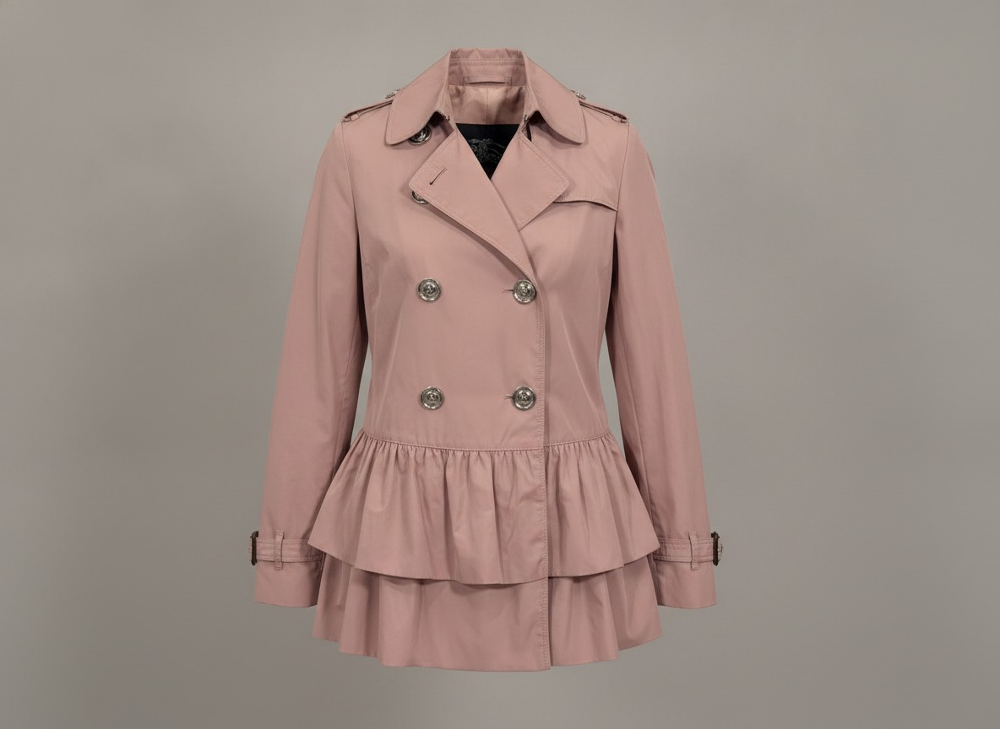 P01abrigoBURBERRY LONDON HIMALAYA USA 4 ITA 38 ColorRosa pálido lisoEstiloAbrigo estilo trench coat con faldón de holanesMaterial—Algodón 100%Algodón 95% / Elastano 5%Algodón 98% / Elastano 2% (mezclilla)Algodón 80% / Poliéster 20%Algodón 60% / Poliéster 40%Poliéster 100%Poliéster 95% / Elastano 5%Poliéster 65% / Algodón 35%Poliéster 70% / Viscosa 30%Viscosa 100%Viscosa 95% / Elastano 5%Lino 100%Lino 55% / Algodón 45%Lana 100%Lana 80% / Poliamida 20%Seda 100%Cashmere 100%Lana 90% / Cashmere 10%Poliamida (nylon) 100%Poliamida 80% / Elastano 20%Acrílico 100%Poliuretano 100% (piel sintética)Cuero 100%DetallesManga larga, cuello de solapa amplia, doble abotonadura metálica plateada y holanes plisados Aprobar Se cambió la prenda
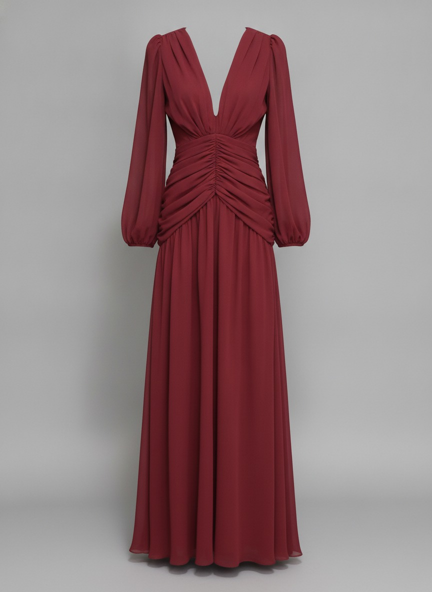 P02vestidoMAJESTE P ColorVino lisoEstiloVestido largo de fiesta de corte fluidoMaterial—Algodón 100%Algodón 95% / Elastano 5%Algodón 98% / Elastano 2% (mezclilla)Algodón 80% / Poliéster 20%Algodón 60% / Poliéster 40%Poliéster 100%Poliéster 95% / Elastano 5%Poliéster 65% / Algodón 35%Poliéster 70% / Viscosa 30%Viscosa 100%Viscosa 95% / Elastano 5%Lino 100%Lino 55% / Algodón 45%Lana 100%Lana 80% / Poliamida 20%Seda 100%Cashmere 100%Lana 90% / Cashmere 10%Poliamida (nylon) 100%Poliamida 80% / Elastano 20%Acrílico 100%Poliuretano 100% (piel sintética)Cuero 100%DetallesEscote en V profundo drapeado, cintura fruncida y mangas largas abullonadas Aprobar Se cambió la prenda
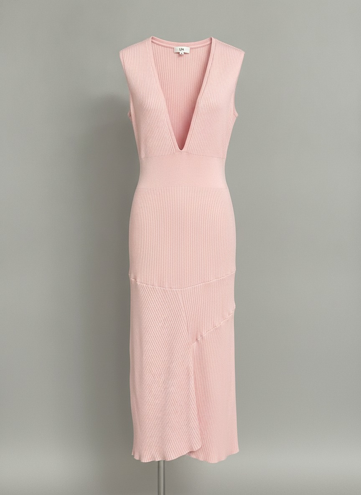 P03vestidoLPA M ColorRosa claro lisoEstiloVestido midi de corte ajustadoMaterial—Algodón 100%Algodón 95% / Elastano 5%Algodón 98% / Elastano 2% (mezclilla)Algodón 80% / Poliéster 20%Algodón 60% / Poliéster 40%Poliéster 100%Poliéster 95% / Elastano 5%Poliéster 65% / Algodón 35%Poliéster 70% / Viscosa 30%Viscosa 100%Viscosa 95% / Elastano 5%Lino 100%Lino 55% / Algodón 45%Lana 100%Lana 80% / Poliamida 20%Seda 100%Cashmere 100%Lana 90% / Cashmere 10%Poliamida (nylon) 100%Poliamida 80% / Elastano 20%Acrílico 100%Poliuretano 100% (piel sintética)Cuero 100%DetallesSin mangas, escote en V profundo y dobladillo asimétrico Aprobar Se cambió la prenda
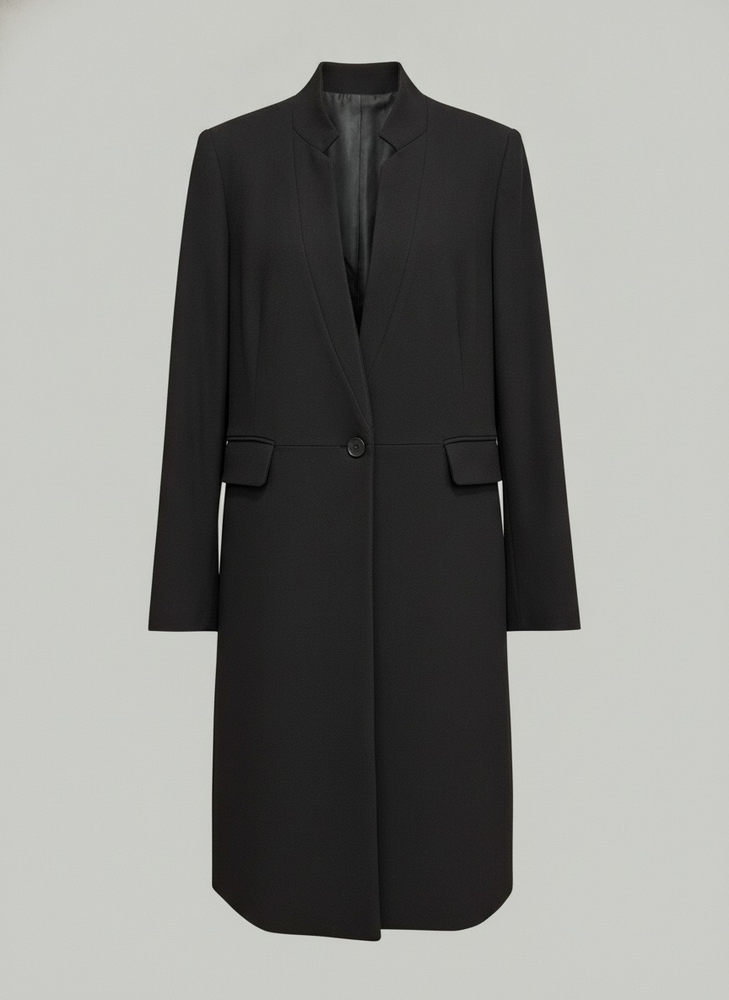 P04abrigoZARA EUR L USA L MEX 30 ColorNegro lisoEstiloAbrigo largo de corte estructuradoMaterial—Algodón 100%Algodón 95% / Elastano 5%Algodón 98% / Elastano 2% (mezclilla)Algodón 80% / Poliéster 20%Algodón 60% / Poliéster 40%Poliéster 100%Poliéster 95% / Elastano 5%Poliéster 65% / Algodón 35%Poliéster 70% / Viscosa 30%Viscosa 100%Viscosa 95% / Elastano 5%Lino 100%Lino 55% / Algodón 45%Lana 100%Lana 80% / Poliamida 20%Seda 100%Cashmere 100%Lana 90% / Cashmere 10%Poliamida (nylon) 100%Poliamida 80% / Elastano 20%Acrílico 100%Poliuretano 100% (piel sintética)Cuero 100%DetallesManga larga, cuello mandarín sin solapa, cierre de un botón y bolsillos laterales con solapa Aprobar Se cambió la prenda
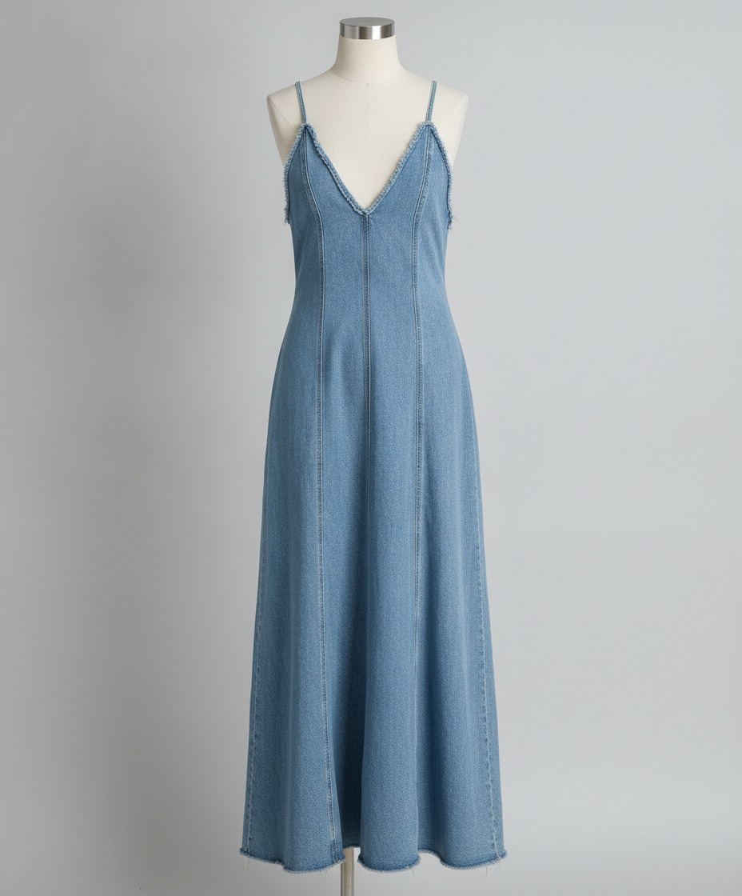 P05vestidoZARA EUR S USA S MEX 26 ColorAzul claroEstiloVestido largo acampanado sin mangasMaterial—Algodón 100%Algodón 95% / Elastano 5%Algodón 98% / Elastano 2% (mezclilla)Algodón 80% / Poliéster 20%Algodón 60% / Poliéster 40%Poliéster 100%Poliéster 95% / Elastano 5%Poliéster 65% / Algodón 35%Poliéster 70% / Viscosa 30%Viscosa 100%Viscosa 95% / Elastano 5%Lino 100%Lino 55% / Algodón 45%Lana 100%Lana 80% / Poliamida 20%Seda 100%Cashmere 100%Lana 90% / Cashmere 10%Poliamida (nylon) 100%Poliamida 80% / Elastano 20%Acrílico 100%Poliuretano 100% (piel sintética)Cuero 100%DetallesEscote en V profundo, tirantes, costuras verticales destacadas y bordes deshilachados Aprobar Se cambió la prenda
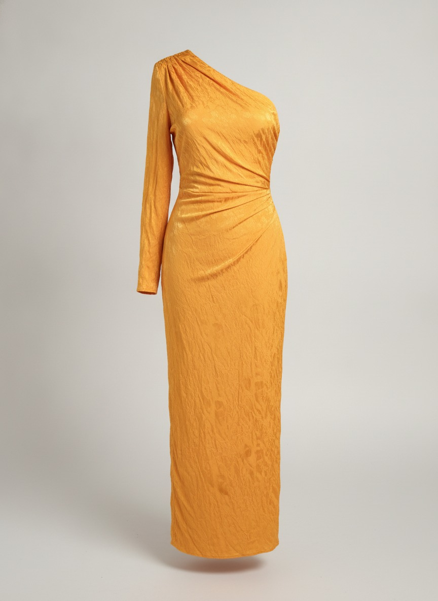 P06vestidoH&M EUR 42 US M CA M MX M CN 170/96A ColorAmarillo mostaza con textura fruncidaEstiloVestido largo asimétrico de corte ceñidoMaterial—Algodón 100%Algodón 95% / Elastano 5%Algodón 98% / Elastano 2% (mezclilla)Algodón 80% / Poliéster 20%Algodón 60% / Poliéster 40%Poliéster 100%Poliéster 95% / Elastano 5%Poliéster 65% / Algodón 35%Poliéster 70% / Viscosa 30%Viscosa 100%Viscosa 95% / Elastano 5%Lino 100%Lino 55% / Algodón 45%Lana 100%Lana 80% / Poliamida 20%Seda 100%Cashmere 100%Lana 90% / Cashmere 10%Poliamida (nylon) 100%Poliamida 80% / Elastano 20%Acrílico 100%Poliuretano 100% (piel sintética)Cuero 100%DetallesEscote de un solo hombro y manga larga Aprobar Se cambió la prenda
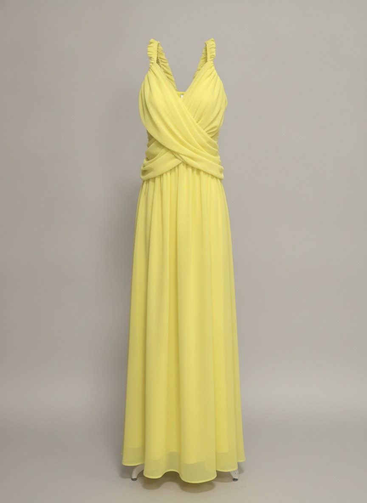 P07vestidoLovers and Friends M ColorAmarillo brillanteEstiloVestido largo de fiesta, corte fluido drapeadoMaterial—Algodón 100%Algodón 95% / Elastano 5%Algodón 98% / Elastano 2% (mezclilla)Algodón 80% / Poliéster 20%Algodón 60% / Poliéster 40%Poliéster 100%Poliéster 95% / Elastano 5%Poliéster 65% / Algodón 35%Poliéster 70% / Viscosa 30%Viscosa 100%Viscosa 95% / Elastano 5%Lino 100%Lino 55% / Algodón 45%Lana 100%Lana 80% / Poliamida 20%Seda 100%Cashmere 100%Lana 90% / Cashmere 10%Poliamida (nylon) 100%Poliamida 80% / Elastano 20%Acrílico 100%Poliuretano 100% (piel sintética)Cuero 100%DetallesSin mangas, cuello halter con pliegues fruncidos y tirantes de ajuste Aprobar Se cambió la prenda
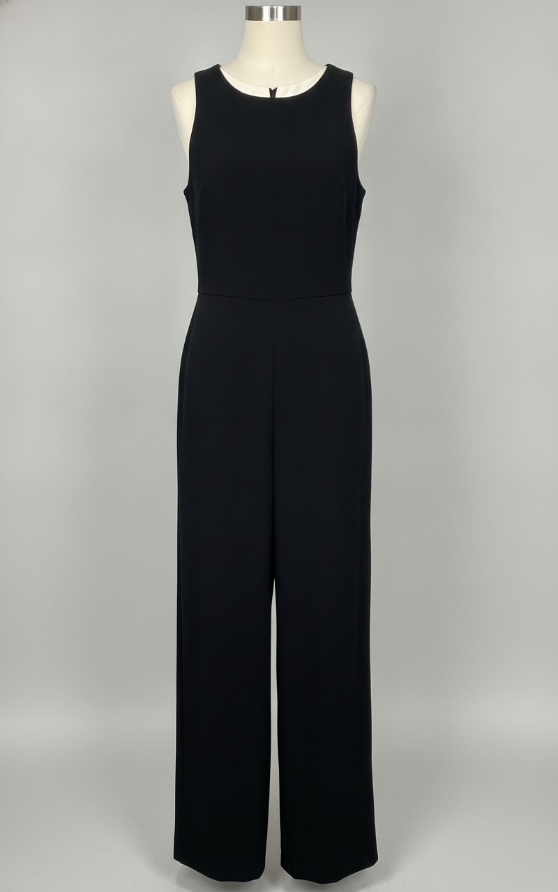 P08vestidoH&M EUR 38 US 8 ColorNegro lisoEstiloVestido largo sin mangas de corte rectoMaterial—Algodón 100%Algodón 95% / Elastano 5%Algodón 98% / Elastano 2% (mezclilla)Algodón 80% / Poliéster 20%Algodón 60% / Poliéster 40%Poliéster 100%Poliéster 95% / Elastano 5%Poliéster 65% / Algodón 35%Poliéster 70% / Viscosa 30%Viscosa 100%Viscosa 95% / Elastano 5%Lino 100%Lino 55% / Algodón 45%Lana 100%Lana 80% / Poliamida 20%Seda 100%Cashmere 100%Lana 90% / Cashmere 10%Poliamida (nylon) 100%Poliamida 80% / Elastano 20%Acrílico 100%Poliuretano 100% (piel sintética)Cuero 100%DetallesSin mangas, tirantes anchos, escote redondo y detalle de vista clara en el cuello Aprobar Se cambió la prenda
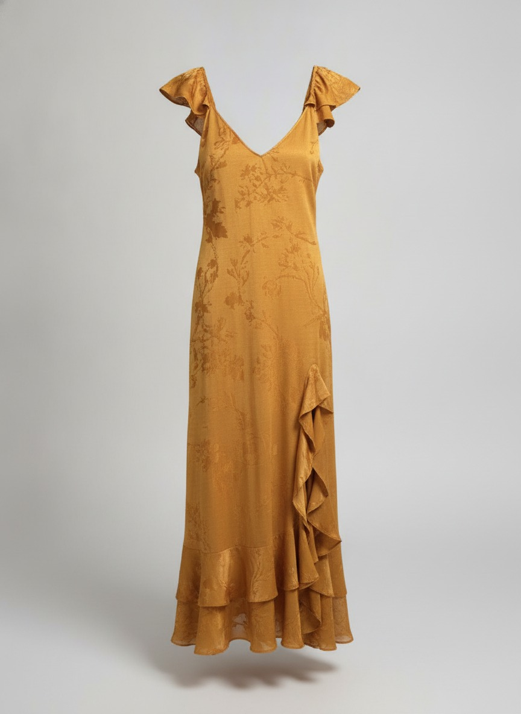 P09vestidoZARA EUR M USA M MEX 28 ColorAmarillo mostaza con patrón floral brocadoEstiloVestido largo de corte fluido con escote en VMaterial—Algodón 100%Algodón 95% / Elastano 5%Algodón 98% / Elastano 2% (mezclilla)Algodón 80% / Poliéster 20%Algodón 60% / Poliéster 40%Poliéster 100%Poliéster 95% / Elastano 5%Poliéster 65% / Algodón 35%Poliéster 70% / Viscosa 30%Viscosa 100%Viscosa 95% / Elastano 5%Lino 100%Lino 55% / Algodón 45%Lana 100%Lana 80% / Poliamida 20%Seda 100%Cashmere 100%Lana 90% / Cashmere 10%Poliamida (nylon) 100%Poliamida 80% / Elastano 20%Acrílico 100%Poliuretano 100% (piel sintética)Cuero 100%DetallesEscote en V, tirantes con holanes y abertura en la falda con volantes Aprobar Se cambió la prenda
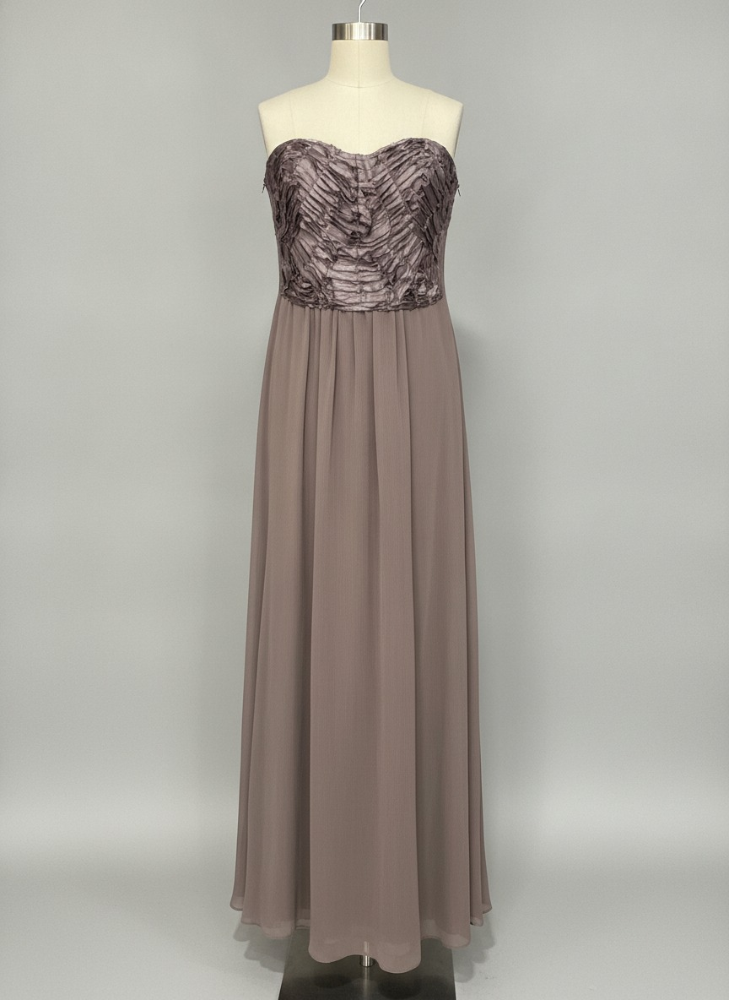 P10vestidoZARA BASIC EUR M USA M MEX 28 ColorTaupe o marrón grisáceoEstiloVestido largo de corte imperio y silueta fluidaMaterial—Algodón 100%Algodón 95% / Elastano 5%Algodón 98% / Elastano 2% (mezclilla)Algodón 80% / Poliéster 20%Algodón 60% / Poliéster 40%Poliéster 100%Poliéster 95% / Elastano 5%Poliéster 65% / Algodón 35%Poliéster 70% / Viscosa 30%Viscosa 100%Viscosa 95% / Elastano 5%Lino 100%Lino 55% / Algodón 45%Lana 100%Lana 80% / Poliamida 20%Seda 100%Cashmere 100%Lana 90% / Cashmere 10%Poliamida (nylon) 100%Poliamida 80% / Elastano 20%Acrílico 100%Poliuretano 100% (piel sintética)Cuero 100%DetallesSin mangas, pechera drapeada con pliegues texturizados Aprobar Se cambió la prenda
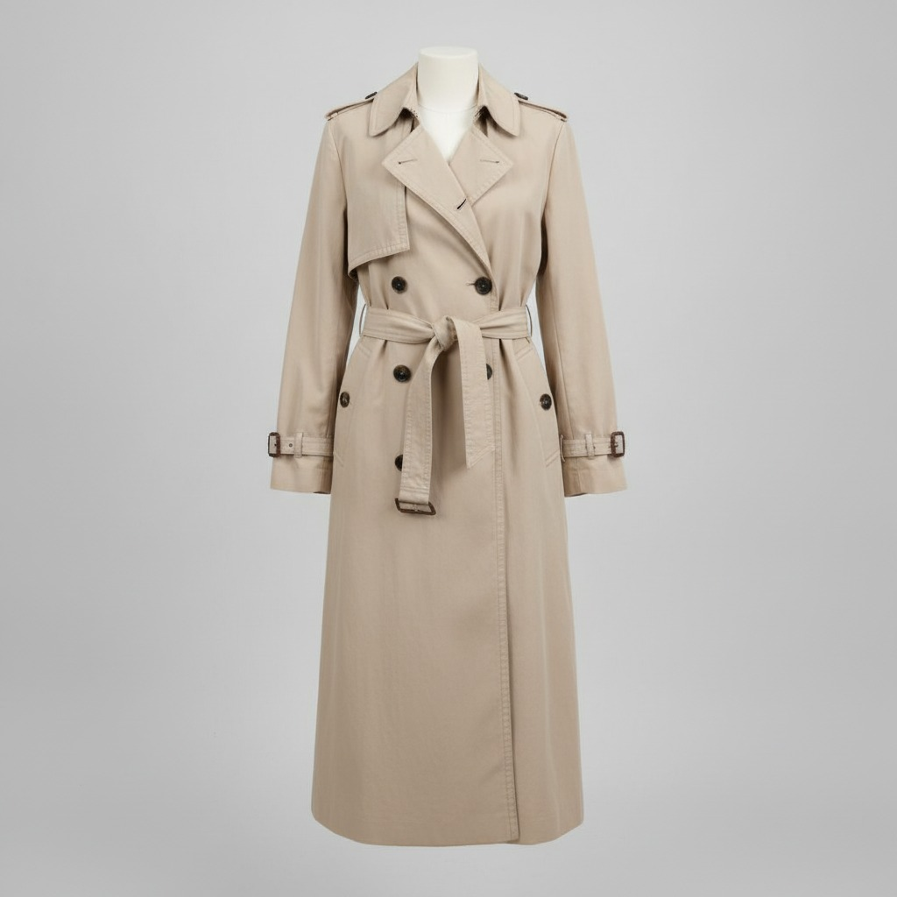 P11abrigoMICHAEL MICHAEL KORS ColorBeige claroEstiloGabardina larga de corte rectoMaterial—Algodón 100%Algodón 95% / Elastano 5%Algodón 98% / Elastano 2% (mezclilla)Algodón 80% / Poliéster 20%Algodón 60% / Poliéster 40%Poliéster 100%Poliéster 95% / Elastano 5%Poliéster 65% / Algodón 35%Poliéster 70% / Viscosa 30%Viscosa 100%Viscosa 95% / Elastano 5%Lino 100%Lino 55% / Algodón 45%Lana 100%Lana 80% / Poliamida 20%Seda 100%Cashmere 100%Lana 90% / Cashmere 10%Poliamida (nylon) 100%Poliamida 80% / Elastano 20%Acrílico 100%Poliuretano 100% (piel sintética)Cuero 100%DetallesCuello con solapas amplias, manga larga con tiras en puños, cinturon a juego y botones a contraste Aprobar Se cambió la prenda
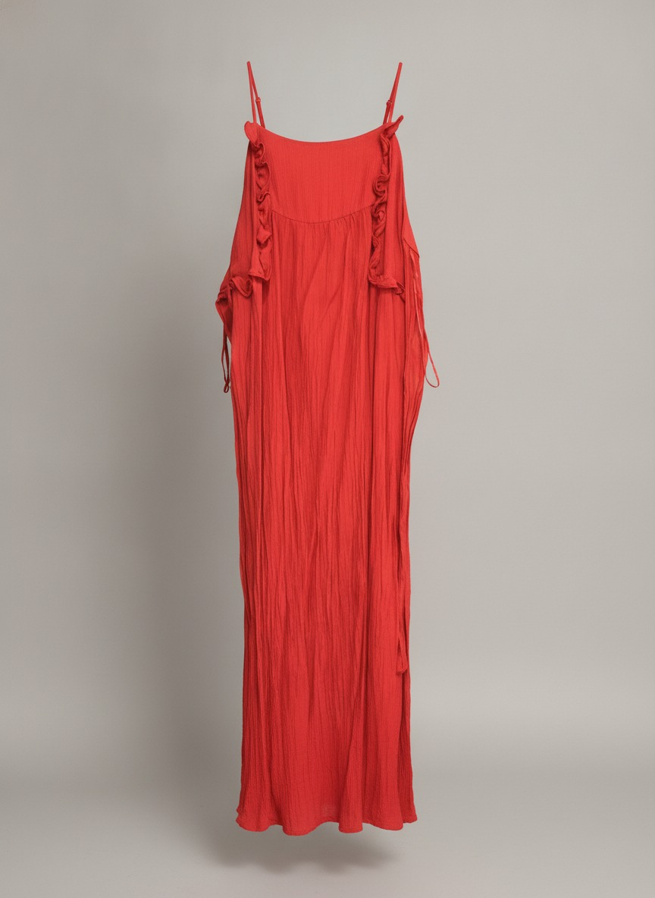 P12vestidoZARA Woman / Basic Collection M ColorRojo lisoEstiloVestido largo de tirantes delgadosMaterial—Algodón 100%Algodón 95% / Elastano 5%Algodón 98% / Elastano 2% (mezclilla)Algodón 80% / Poliéster 20%Algodón 60% / Poliéster 40%Poliéster 100%Poliéster 95% / Elastano 5%Poliéster 65% / Algodón 35%Poliéster 70% / Viscosa 30%Viscosa 100%Viscosa 95% / Elastano 5%Lino 100%Lino 55% / Algodón 45%Lana 100%Lana 80% / Poliamida 20%Seda 100%Cashmere 100%Lana 90% / Cashmere 10%Poliamida (nylon) 100%Poliamida 80% / Elastano 20%Acrílico 100%Poliuretano 100% (piel sintética)Cuero 100%DetallesEscote con holanes fruncidos y tirantes delgados Aprobar Se cambió la prenda
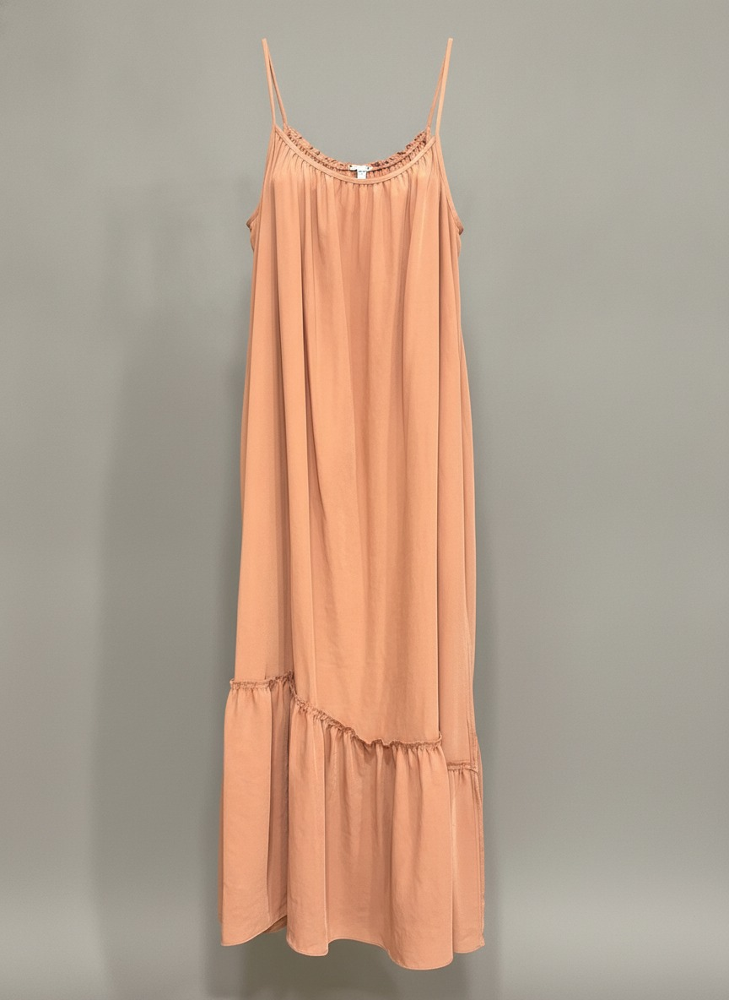 P13vestidoUNIQLO M ColorTono durazno salmón lisoEstiloVestido largo de corte holgado y fluidoMaterial—Algodón 100%Algodón 95% / Elastano 5%Algodón 98% / Elastano 2% (mezclilla)Algodón 80% / Poliéster 20%Algodón 60% / Poliéster 40%Poliéster 100%Poliéster 95% / Elastano 5%Poliéster 65% / Algodón 35%Poliéster 70% / Viscosa 30%Viscosa 100%Viscosa 95% / Elastano 5%Lino 100%Lino 55% / Algodón 45%Lana 100%Lana 80% / Poliamida 20%Seda 100%Cashmere 100%Lana 90% / Cashmere 10%Poliamida (nylon) 100%Poliamida 80% / Elastano 20%Acrílico 100%Poliuretano 100% (piel sintética)Cuero 100%DetallesTirantes delgados ajustables, escote fruncido y panel de olán en el bajo Aprobar Se cambió la prenda
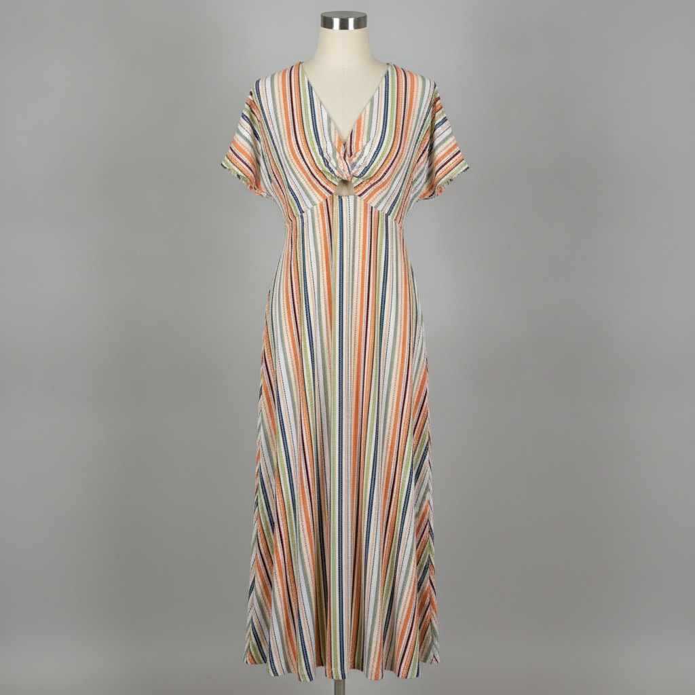 P14vestidoSPRINGFIELD EUR/ITA XS MEX 24 USA XS ColorMulticolor con estampado de rayas verticales en tonos naranja, verde, azul, borgoña y blancoEstiloVestido largo de corte imperio con falda fluidaMaterial—Algodón 100%Algodón 95% / Elastano 5%Algodón 98% / Elastano 2% (mezclilla)Algodón 80% / Poliéster 20%Algodón 60% / Poliéster 40%Poliéster 100%Poliéster 95% / Elastano 5%Poliéster 65% / Algodón 35%Poliéster 70% / Viscosa 30%Viscosa 100%Viscosa 95% / Elastano 5%Lino 100%Lino 55% / Algodón 45%Lana 100%Lana 80% / Poliamida 20%Seda 100%Cashmere 100%Lana 90% / Cashmere 10%Poliamida (nylon) 100%Poliamida 80% / Elastano 20%Acrílico 100%Poliuretano 100% (piel sintética)Cuero 100%DetallesEscote en V cruzado con nudo frontal, manga corta caída y largo maxi Aprobar Se cambió la prenda
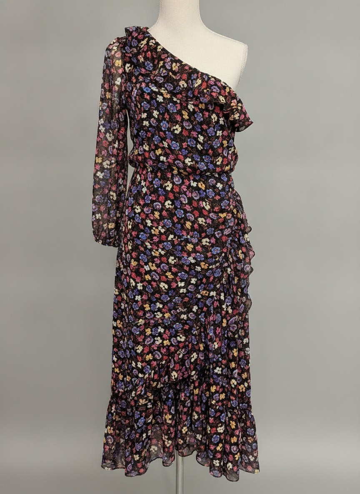 P15vestidoASTR THE LABEL M ColorNegro con estampado floral multicolorEstiloVestido largo de corte asimétrico y drapeadoMaterial—Algodón 100%Algodón 95% / Elastano 5%Algodón 98% / Elastano 2% (mezclilla)Algodón 80% / Poliéster 20%Algodón 60% / Poliéster 40%Poliéster 100%Poliéster 95% / Elastano 5%Poliéster 65% / Algodón 35%Poliéster 70% / Viscosa 30%Viscosa 100%Viscosa 95% / Elastano 5%Lino 100%Lino 55% / Algodón 45%Lana 100%Lana 80% / Poliamida 20%Seda 100%Cashmere 100%Lana 90% / Cashmere 10%Poliamida (nylon) 100%Poliamida 80% / Elastano 20%Acrílico 100%Poliuretano 100% (piel sintética)Cuero 100%DetallesUn solo hombro, manga larga, fruncidos laterales y holanes en la falda Aprobar Se cambió la prenda
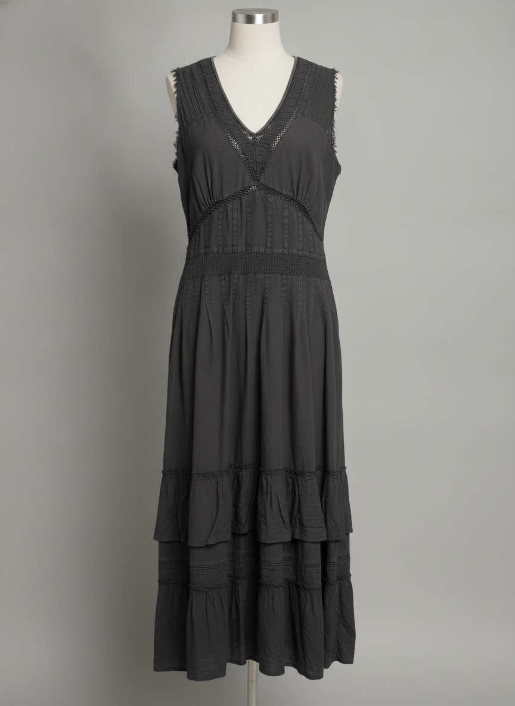 P16vestidoZARA BASIC EUR M USA M MEX 28 ColorNegro grisáceo lisoEstiloVestido largo sin mangas con talle alto y falda fluidaMaterial—Algodón 100%Algodón 95% / Elastano 5%Algodón 98% / Elastano 2% (mezclilla)Algodón 80% / Poliéster 20%Algodón 60% / Poliéster 40%Poliéster 100%Poliéster 95% / Elastano 5%Poliéster 65% / Algodón 35%Poliéster 70% / Viscosa 30%Viscosa 100%Viscosa 95% / Elastano 5%Lino 100%Lino 55% / Algodón 45%Lana 100%Lana 80% / Poliamida 20%Seda 100%Cashmere 100%Lana 90% / Cashmere 10%Poliamida (nylon) 100%Poliamida 80% / Elastano 20%Acrílico 100%Poliuretano 100% (piel sintética)Cuero 100%DetallesSin mangas, escote en V, bordados calados y pliegues en talle y falda Aprobar Se cambió la prenda
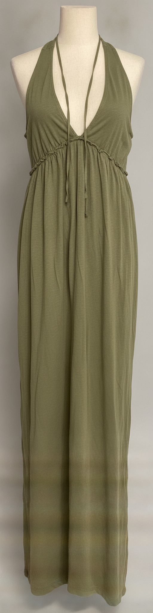 P17vestido ColorVerde olivaEstiloVestido largo holgado, corte imperioMaterial—Algodón 100%Algodón 95% / Elastano 5%Algodón 98% / Elastano 2% (mezclilla)Algodón 80% / Poliéster 20%Algodón 60% / Poliéster 40%Poliéster 100%Poliéster 95% / Elastano 5%Poliéster 65% / Algodón 35%Poliéster 70% / Viscosa 30%Viscosa 100%Viscosa 95% / Elastano 5%Lino 100%Lino 55% / Algodón 45%Lana 100%Lana 80% / Poliamida 20%Seda 100%Cashmere 100%Lana 90% / Cashmere 10%Poliamida (nylon) 100%Poliamida 80% / Elastano 20%Acrílico 100%Poliuretano 100% (piel sintética)Cuero 100%DetallesSin mangas, tirantes anchos, escote en V pronunciado, fruncido bajo el pecho y cordones para atar Aprobar Se cambió la prenda
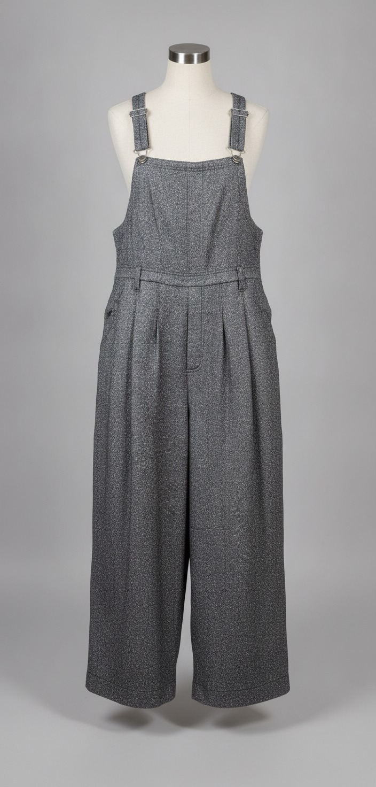 P18pantalonFree People S/P ColorGris jaspeadoEstiloOverol o pantalón de peto largo con pierna ampliaMaterial—Algodón 100%Algodón 95% / Elastano 5%Algodón 98% / Elastano 2% (mezclilla)Algodón 80% / Poliéster 20%Algodón 60% / Poliéster 40%Poliéster 100%Poliéster 95% / Elastano 5%Poliéster 65% / Algodón 35%Poliéster 70% / Viscosa 30%Viscosa 100%Viscosa 95% / Elastano 5%Lino 100%Lino 55% / Algodón 45%Lana 100%Lana 80% / Poliamida 20%Seda 100%Cashmere 100%Lana 90% / Cashmere 10%Poliamida (nylon) 100%Poliamida 80% / Elastano 20%Acrílico 100%Poliuretano 100% (piel sintética)Cuero 100%DetallesTirantes ajustables, pretina entallada con pliegues y bolsillos laterales Aprobar Se cambió la prenda
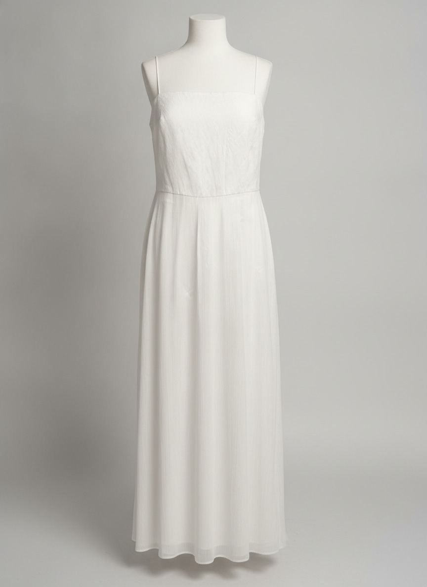 P19vestidoZARA EUR M USA M MEX 28 ColorBlanco lisoEstiloVestido largo de corte en la cinturaMaterial—Algodón 100%Algodón 95% / Elastano 5%Algodón 98% / Elastano 2% (mezclilla)Algodón 80% / Poliéster 20%Algodón 60% / Poliéster 40%Poliéster 100%Poliéster 95% / Elastano 5%Poliéster 65% / Algodón 35%Poliéster 70% / Viscosa 30%Viscosa 100%Viscosa 95% / Elastano 5%Lino 100%Lino 55% / Algodón 45%Lana 100%Lana 80% / Poliamida 20%Seda 100%Cashmere 100%Lana 90% / Cashmere 10%Poliamida (nylon) 100%Poliamida 80% / Elastano 20%Acrílico 100%Poliuretano 100% (piel sintética)Cuero 100%DetallesTirantes delgados, escote recto y falda larga plisada Aprobar Se cambió la prenda
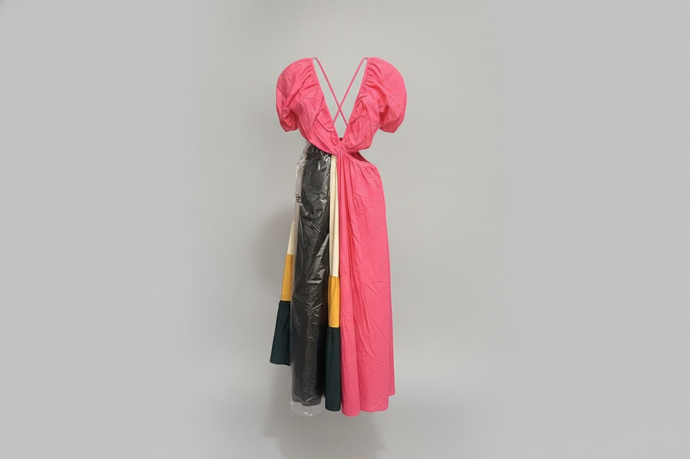 P20vestido ColorRosa fucsia lisoEstiloVestido largo con recortes cutoutMaterial—Algodón 100%Algodón 95% / Elastano 5%Algodón 98% / Elastano 2% (mezclilla)Algodón 80% / Poliéster 20%Algodón 60% / Poliéster 40%Poliéster 100%Poliéster 95% / Elastano 5%Poliéster 65% / Algodón 35%Poliéster 70% / Viscosa 30%Viscosa 100%Viscosa 95% / Elastano 5%Lino 100%Lino 55% / Algodón 45%Lana 100%Lana 80% / Poliamida 20%Seda 100%Cashmere 100%Lana 90% / Cashmere 10%Poliamida (nylon) 100%Poliamida 80% / Elastano 20%Acrílico 100%Poliuretano 100% (piel sintética)Cuero 100%DetallesMangas cortas abullonadas, escote profundo fruncido y tirantes cruzados en la espalda Aprobar Se cambió la prenda
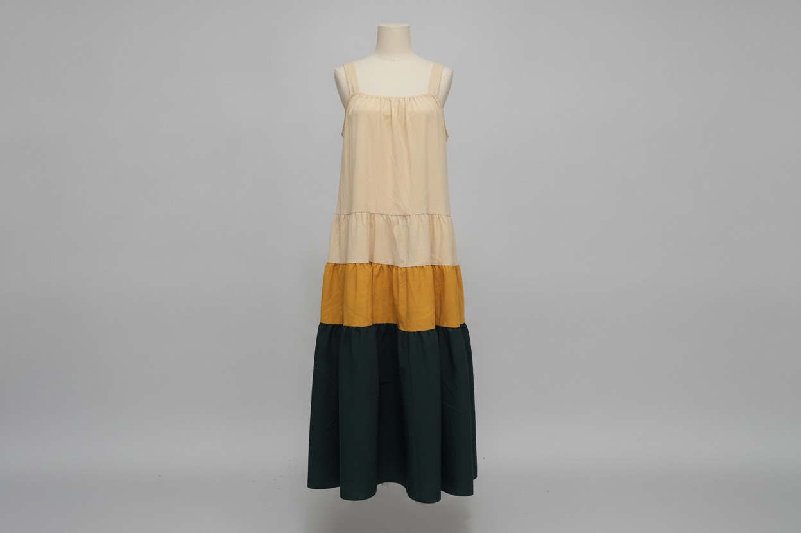 P21vestido ColorBloques de color horizontales en beige, amarillo y verde oscuroEstiloVestido largo de silueta amplia en nivelesMaterial—Algodón 100%Algodón 95% / Elastano 5%Algodón 98% / Elastano 2% (mezclilla)Algodón 80% / Poliéster 20%Algodón 60% / Poliéster 40%Poliéster 100%Poliéster 95% / Elastano 5%Poliéster 65% / Algodón 35%Poliéster 70% / Viscosa 30%Viscosa 100%Viscosa 95% / Elastano 5%Lino 100%Lino 55% / Algodón 45%Lana 100%Lana 80% / Poliamida 20%Seda 100%Cashmere 100%Lana 90% / Cashmere 10%Poliamida (nylon) 100%Poliamida 80% / Elastano 20%Acrílico 100%Poliuretano 100% (piel sintética)Cuero 100%DetallesTirantes anchos, sin mangas y falda larga dividida en tres niveles con olanes Aprobar Se cambió la prenda
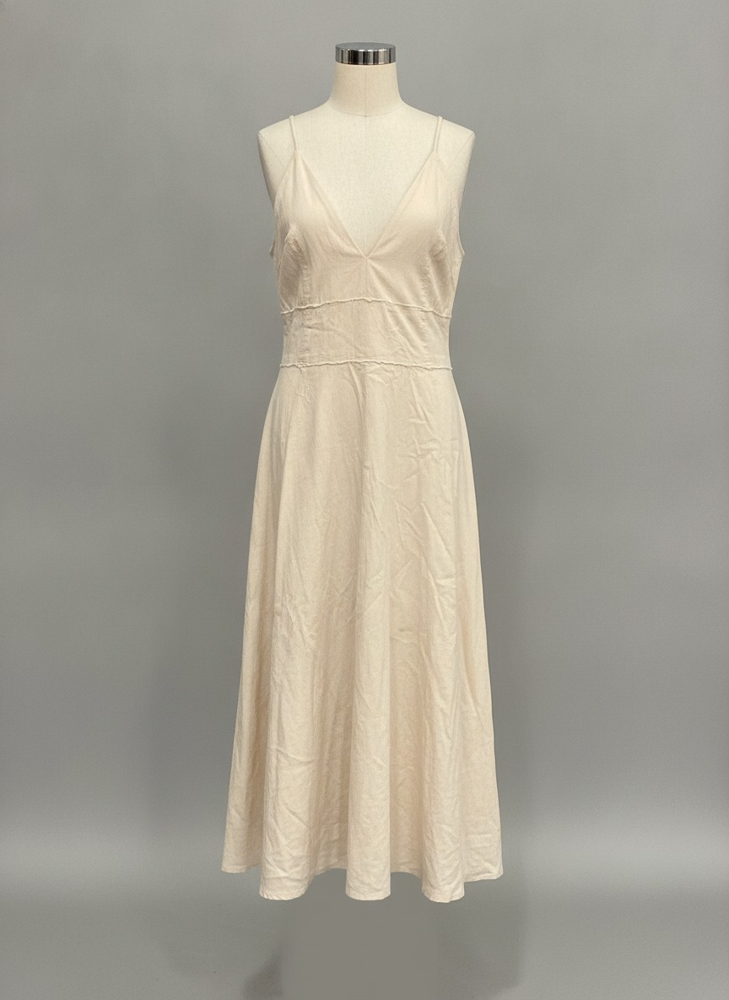 P22vestidoZARA EUR M USA M MEX 28 ColorCremaEstiloVestido midi de tirantesMaterial—Algodón 100%Algodón 95% / Elastano 5%Algodón 98% / Elastano 2% (mezclilla)Algodón 80% / Poliéster 20%Algodón 60% / Poliéster 40%Poliéster 100%Poliéster 95% / Elastano 5%Poliéster 65% / Algodón 35%Poliéster 70% / Viscosa 30%Viscosa 100%Viscosa 95% / Elastano 5%Lino 100%Lino 55% / Algodón 45%Lana 100%Lana 80% / Poliamida 20%Seda 100%Cashmere 100%Lana 90% / Cashmere 10%Poliamida (nylon) 100%Poliamida 80% / Elastano 20%Acrílico 100%Poliuretano 100% (piel sintética)Cuero 100%DetallesEscote en V, tirantes finos y costuras decorativas horizontales Aprobar Se cambió la prenda
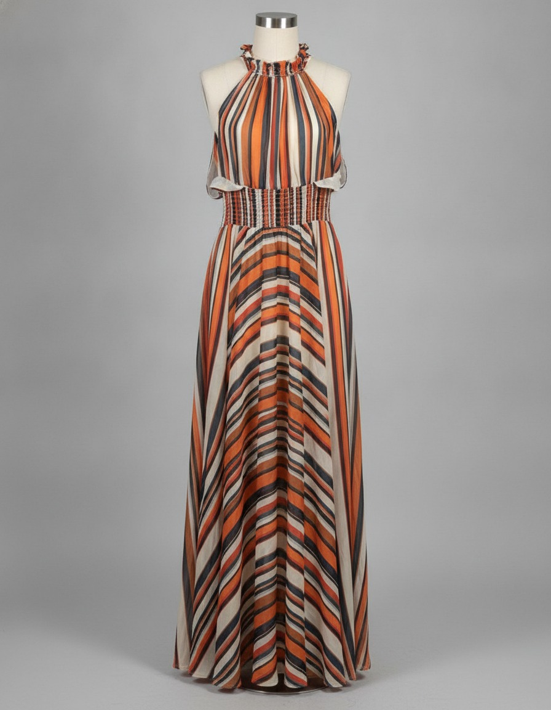 P23vestidoFATE S ColorEstampado de rayas multicolores en naranja, crema, azul y negroEstiloVestido largo sin mangas de corte holgadoMaterial—Algodón 100%Algodón 95% / Elastano 5%Algodón 98% / Elastano 2% (mezclilla)Algodón 80% / Poliéster 20%Algodón 60% / Poliéster 40%Poliéster 100%Poliéster 95% / Elastano 5%Poliéster 65% / Algodón 35%Poliéster 70% / Viscosa 30%Viscosa 100%Viscosa 95% / Elastano 5%Lino 100%Lino 55% / Algodón 45%Lana 100%Lana 80% / Poliamida 20%Seda 100%Cashmere 100%Lana 90% / Cashmere 10%Poliamida (nylon) 100%Poliamida 80% / Elastano 20%Acrílico 100%Poliuretano 100% (piel sintética)Cuero 100%DetallesEscote halter, cintura elástica en nido de abeja y falda fluida Aprobar Se cambió la prenda
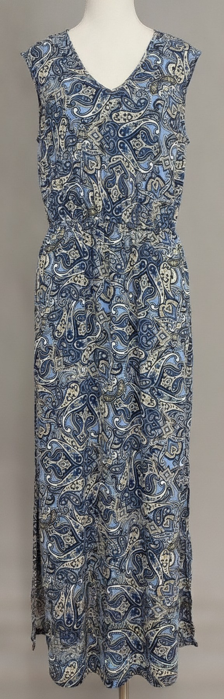 P24vestido ColorEstampado paisley en tonos azul, blanco y negroEstiloVestido largo de corte fluido con cintura elásticaMaterial—Algodón 100%Algodón 95% / Elastano 5%Algodón 98% / Elastano 2% (mezclilla)Algodón 80% / Poliéster 20%Algodón 60% / Poliéster 40%Poliéster 100%Poliéster 95% / Elastano 5%Poliéster 65% / Algodón 35%Poliéster 70% / Viscosa 30%Viscosa 100%Viscosa 95% / Elastano 5%Lino 100%Lino 55% / Algodón 45%Lana 100%Lana 80% / Poliamida 20%Seda 100%Cashmere 100%Lana 90% / Cashmere 10%Poliamida (nylon) 100%Poliamida 80% / Elastano 20%Acrílico 100%Poliuretano 100% (piel sintética)Cuero 100%DetallesSin mangas, cuello redondo y largo maxi Aprobar Se cambió la prenda
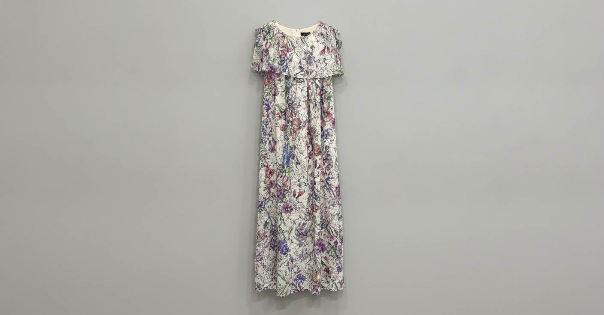 P25vestido ColorBlanco con estampado floral multicolor en tonos morado, verde y rosaEstiloVestido largo de corte fluidoMaterial—Algodón 100%Algodón 95% / Elastano 5%Algodón 98% / Elastano 2% (mezclilla)Algodón 80% / Poliéster 20%Algodón 60% / Poliéster 40%Poliéster 100%Poliéster 95% / Elastano 5%Poliéster 65% / Algodón 35%Poliéster 70% / Viscosa 30%Viscosa 100%Viscosa 95% / Elastano 5%Lino 100%Lino 55% / Algodón 45%Lana 100%Lana 80% / Poliamida 20%Seda 100%Cashmere 100%Lana 90% / Cashmere 10%Poliamida (nylon) 100%Poliamida 80% / Elastano 20%Acrílico 100%Poliuretano 100% (piel sintética)Cuero 100%DetallesSin mangas, escote redondo y olán superpuesto en el pecho Aprobar Se cambió la prenda
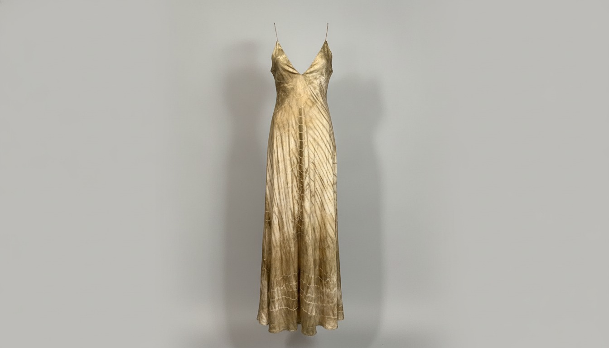 P26vestido ColorDorado, beige y caqui con patrón tie-dyeEstiloVestido largo de tirantes y corte fluidoMaterial—Algodón 100%Algodón 95% / Elastano 5%Algodón 98% / Elastano 2% (mezclilla)Algodón 80% / Poliéster 20%Algodón 60% / Poliéster 40%Poliéster 100%Poliéster 95% / Elastano 5%Poliéster 65% / Algodón 35%Poliéster 70% / Viscosa 30%Viscosa 100%Viscosa 95% / Elastano 5%Lino 100%Lino 55% / Algodón 45%Lana 100%Lana 80% / Poliamida 20%Seda 100%Cashmere 100%Lana 90% / Cashmere 10%Poliamida (nylon) 100%Poliamida 80% / Elastano 20%Acrílico 100%Poliuretano 100% (piel sintética)Cuero 100%DetallesEscote en V profundo y tirantes finos Aprobar Se cambió la prenda
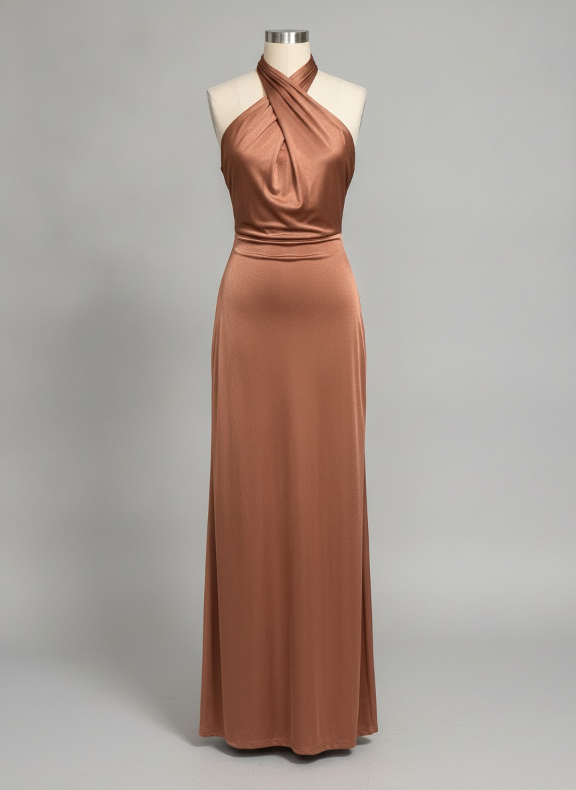 P27vestidoBAOBAB S ColorCafé terracota brillante lisoEstiloVestido largo de corte fluidoMaterial—Algodón 100%Algodón 95% / Elastano 5%Algodón 98% / Elastano 2% (mezclilla)Algodón 80% / Poliéster 20%Algodón 60% / Poliéster 40%Poliéster 100%Poliéster 95% / Elastano 5%Poliéster 65% / Algodón 35%Poliéster 70% / Viscosa 30%Viscosa 100%Viscosa 95% / Elastano 5%Lino 100%Lino 55% / Algodón 45%Lana 100%Lana 80% / Poliamida 20%Seda 100%Cashmere 100%Lana 90% / Cashmere 10%Poliamida (nylon) 100%Poliamida 80% / Elastano 20%Acrílico 100%Poliuretano 100% (piel sintética)Cuero 100%DetallesCuello drapeado estilo halter, sin mangas y largo maxi Aprobar Se cambió la prenda
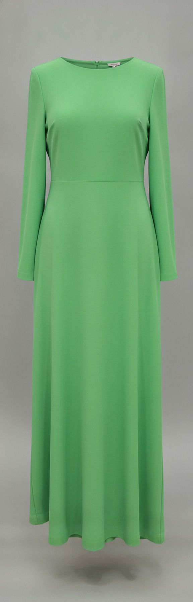 P28vestido ColorVerde brillante, lisoEstiloVestido largo de corte fluidoMaterial—Algodón 100%Algodón 95% / Elastano 5%Algodón 98% / Elastano 2% (mezclilla)Algodón 80% / Poliéster 20%Algodón 60% / Poliéster 40%Poliéster 100%Poliéster 95% / Elastano 5%Poliéster 65% / Algodón 35%Poliéster 70% / Viscosa 30%Viscosa 100%Viscosa 95% / Elastano 5%Lino 100%Lino 55% / Algodón 45%Lana 100%Lana 80% / Poliamida 20%Seda 100%Cashmere 100%Lana 90% / Cashmere 10%Poliamida (nylon) 100%Poliamida 80% / Elastano 20%Acrílico 100%Poliuretano 100% (piel sintética)Cuero 100%DetallesSin mangas, cuello redondo y largo hasta los tobillos Aprobar Se cambió la prenda
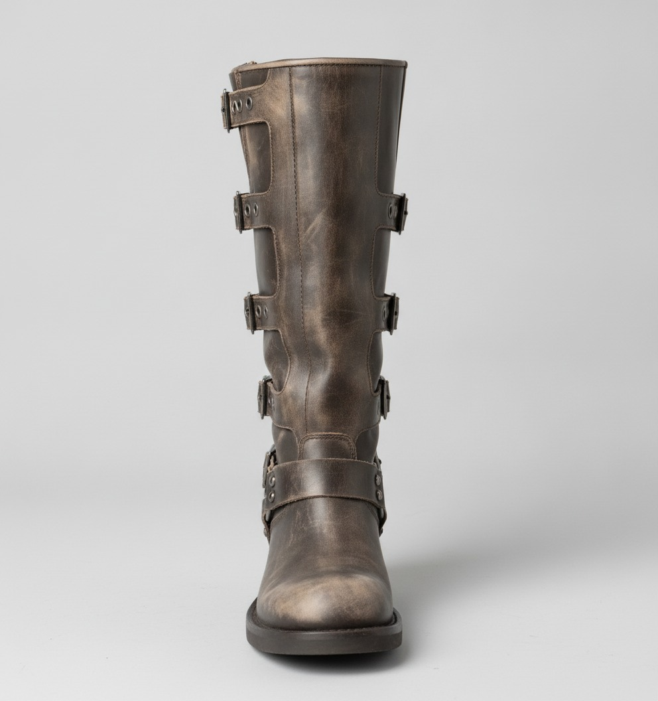 P29zapatos ColorCafé desgastado con acabado envejecidoEstiloBotas altas de caña alta estilo motociclista con tacón bajoMaterial—Algodón 100%Algodón 95% / Elastano 5%Algodón 98% / Elastano 2% (mezclilla)Algodón 80% / Poliéster 20%Algodón 60% / Poliéster 40%Poliéster 100%Poliéster 95% / Elastano 5%Poliéster 65% / Algodón 35%Poliéster 70% / Viscosa 30%Viscosa 100%Viscosa 95% / Elastano 5%Lino 100%Lino 55% / Algodón 45%Lana 100%Lana 80% / Poliamida 20%Seda 100%Cashmere 100%Lana 90% / Cashmere 10%Poliamida (nylon) 100%Poliamida 80% / Elastano 20%Acrílico 100%Poliuretano 100% (piel sintética)Cuero 100%DetallesMúltiples correas con hebillas metálicas, ojetes y arnés decorativo en el tobillo Aprobar Se cambió la prenda
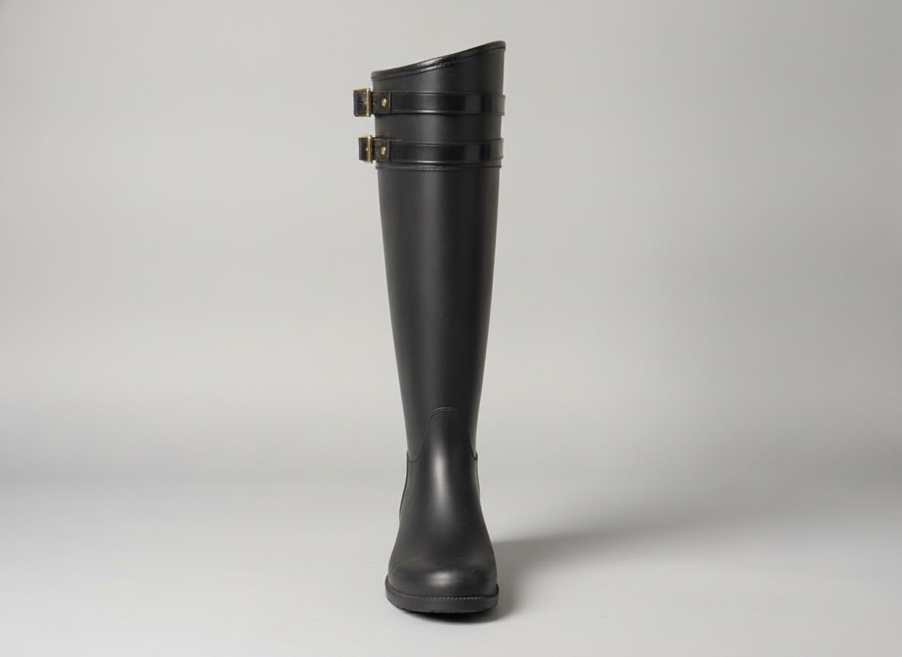 P30zapatosBURBERRY ColorNegro liso con interior a cuadrosEstiloBota alta de lluvia estilo equitaciónMaterial—Algodón 100%Algodón 95% / Elastano 5%Algodón 98% / Elastano 2% (mezclilla)Algodón 80% / Poliéster 20%Algodón 60% / Poliéster 40%Poliéster 100%Poliéster 95% / Elastano 5%Poliéster 65% / Algodón 35%Poliéster 70% / Viscosa 30%Viscosa 100%Viscosa 95% / Elastano 5%Lino 100%Lino 55% / Algodón 45%Lana 100%Lana 80% / Poliamida 20%Seda 100%Cashmere 100%Lana 90% / Cashmere 10%Poliamida (nylon) 100%Poliamida 80% / Elastano 20%Acrílico 100%Poliuretano 100% (piel sintética)Cuero 100%DetallesCorreas decorativas superiores, hebillas doradas y cierre posterior Aprobar Se cambió la prenda
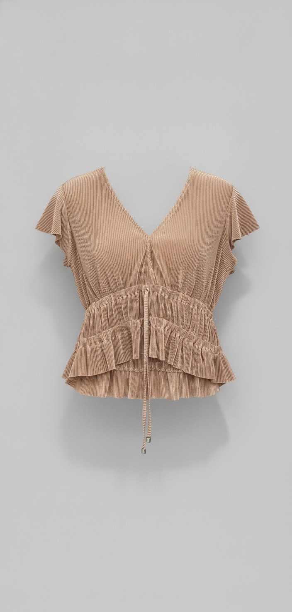 P31blusaZARA EUR M USA M MEX 28 ColorBeige rosa champagneEstiloBlusa corta plisada con cintura elásticaMaterial—Algodón 100%Algodón 95% / Elastano 5%Algodón 98% / Elastano 2% (mezclilla)Algodón 80% / Poliéster 20%Algodón 60% / Poliéster 40%Poliéster 100%Poliéster 95% / Elastano 5%Poliéster 65% / Algodón 35%Poliéster 70% / Viscosa 30%Viscosa 100%Viscosa 95% / Elastano 5%Lino 100%Lino 55% / Algodón 45%Lana 100%Lana 80% / Poliamida 20%Seda 100%Cashmere 100%Lana 90% / Cashmere 10%Poliamida (nylon) 100%Poliamida 80% / Elastano 20%Acrílico 100%Poliuretano 100% (piel sintética)Cuero 100%DetallesEscote en V, manga corta y cinta ajustable en cintura Aprobar Se cambió la prenda
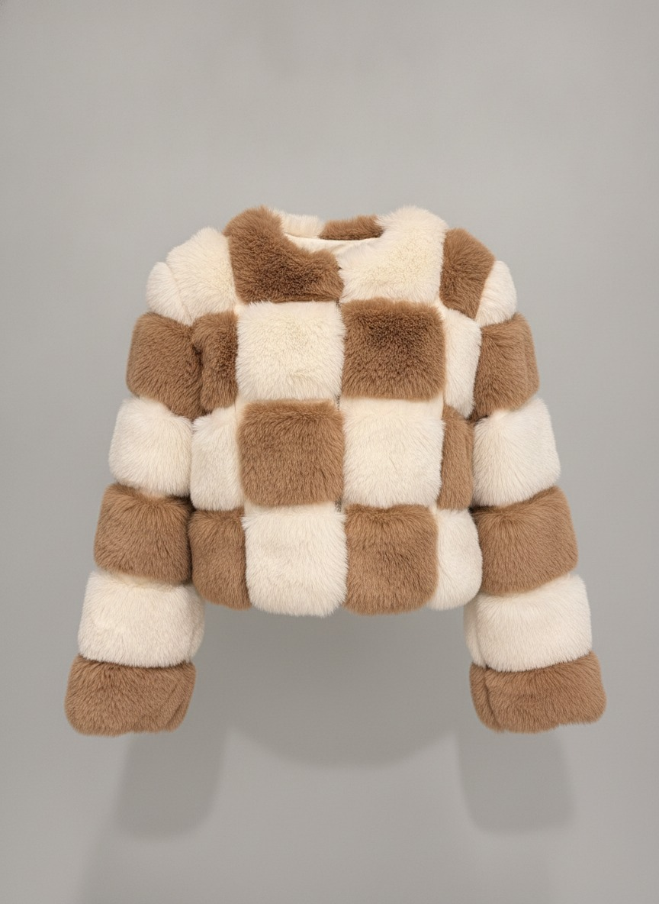 P32chamarraKISS & LOVE COLLECTION L/XL ColorCafé claro y crema con patrón de bloques tipo ajedrezEstiloChamarra corta de corte rectoMaterial—Algodón 100%Algodón 95% / Elastano 5%Algodón 98% / Elastano 2% (mezclilla)Algodón 80% / Poliéster 20%Algodón 60% / Poliéster 40%Poliéster 100%Poliéster 95% / Elastano 5%Poliéster 65% / Algodón 35%Poliéster 70% / Viscosa 30%Viscosa 100%Viscosa 95% / Elastano 5%Lino 100%Lino 55% / Algodón 45%Lana 100%Lana 80% / Poliamida 20%Seda 100%Cashmere 100%Lana 90% / Cashmere 10%Poliamida (nylon) 100%Poliamida 80% / Elastano 20%Acrílico 100%Poliuretano 100% (piel sintética)Cuero 100%DetallesManga larga, largo corto, cuello redondo y frente abierto Aprobar Se cambió la prenda
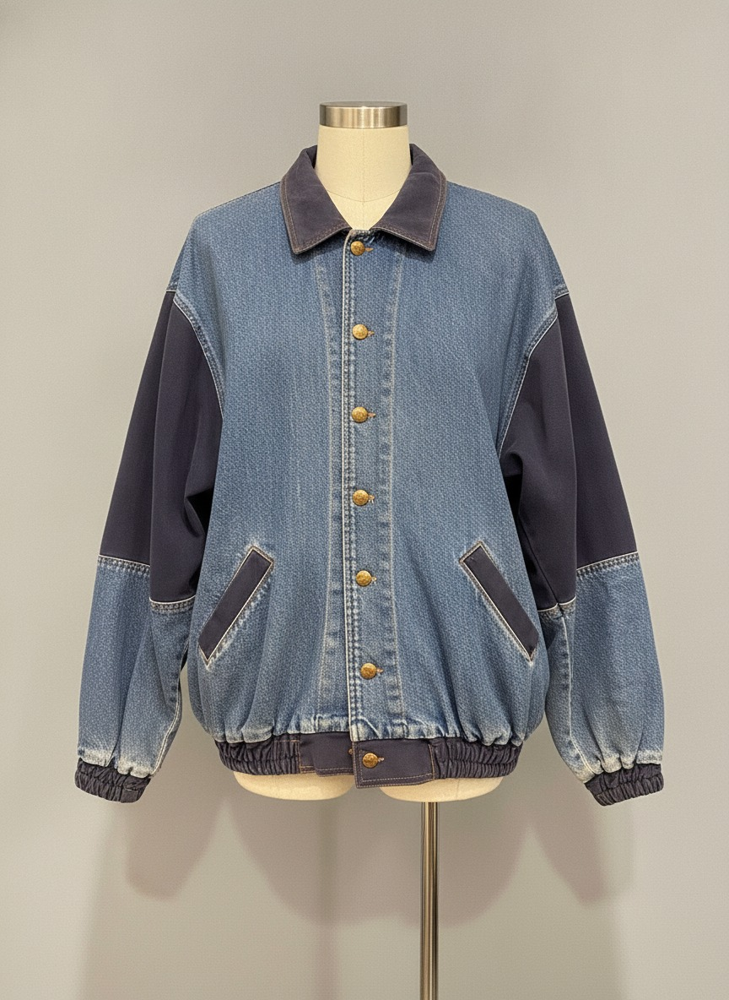 P33chamarraTORINO MEXICO-ITALIA 38 ColorAzul mezclilla con bloques en azul marinoEstiloChamarra estilo bomberMaterial—Algodón 100%Algodón 95% / Elastano 5%Algodón 98% / Elastano 2% (mezclilla)Algodón 80% / Poliéster 20%Algodón 60% / Poliéster 40%Poliéster 100%Poliéster 95% / Elastano 5%Poliéster 65% / Algodón 35%Poliéster 70% / Viscosa 30%Viscosa 100%Viscosa 95% / Elastano 5%Lino 100%Lino 55% / Algodón 45%Lana 100%Lana 80% / Poliamida 20%Seda 100%Cashmere 100%Lana 90% / Cashmere 10%Poliamida (nylon) 100%Poliamida 80% / Elastano 20%Acrílico 100%Poliuretano 100% (piel sintética)Cuero 100%DetallesManga larga, cuello camisero, botones metálicos dorados, puños y pretina elásticos Aprobar Se cambió la prenda
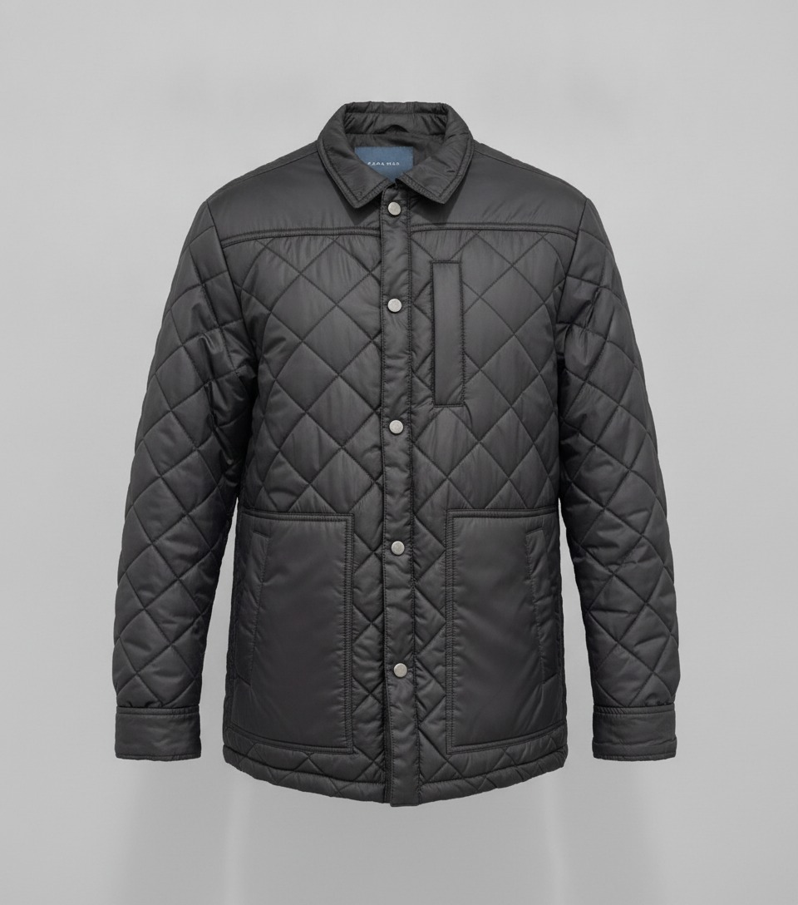 P34chamarraZARA MAN EUR L USA L MEX 42 ColorNegro liso con patron acolchado de rombosEstiloChamarra acolchada de corte rectoMaterial—Algodón 100%Algodón 95% / Elastano 5%Algodón 98% / Elastano 2% (mezclilla)Algodón 80% / Poliéster 20%Algodón 60% / Poliéster 40%Poliéster 100%Poliéster 95% / Elastano 5%Poliéster 65% / Algodón 35%Poliéster 70% / Viscosa 30%Viscosa 100%Viscosa 95% / Elastano 5%Lino 100%Lino 55% / Algodón 45%Lana 100%Lana 80% / Poliamida 20%Seda 100%Cashmere 100%Lana 90% / Cashmere 10%Poliamida (nylon) 100%Poliamida 80% / Elastano 20%Acrílico 100%Poliuretano 100% (piel sintética)Cuero 100%DetallesManga larga, cuello camisero, cierre de botones de presion metalicos y bolsillos de parche Aprobar Se cambió la prenda
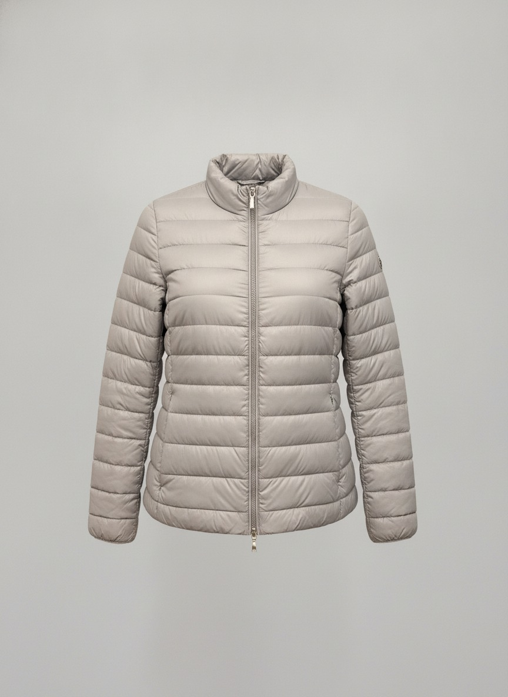 P35chamarraGEOX 46 40 42 12 10 ColorGris claro lisoEstiloChamarra puffer acolchada de corte rectoMaterial—Algodón 100%Algodón 95% / Elastano 5%Algodón 98% / Elastano 2% (mezclilla)Algodón 80% / Poliéster 20%Algodón 60% / Poliéster 40%Poliéster 100%Poliéster 95% / Elastano 5%Poliéster 65% / Algodón 35%Poliéster 70% / Viscosa 30%Viscosa 100%Viscosa 95% / Elastano 5%Lino 100%Lino 55% / Algodón 45%Lana 100%Lana 80% / Poliamida 20%Seda 100%Cashmere 100%Lana 90% / Cashmere 10%Poliamida (nylon) 100%Poliamida 80% / Elastano 20%Acrílico 100%Poliuretano 100% (piel sintética)Cuero 100%DetallesManga larga, cuello corto, cierre frontal de cremallera metálica y costuras horizontales Aprobar Se cambió la prenda
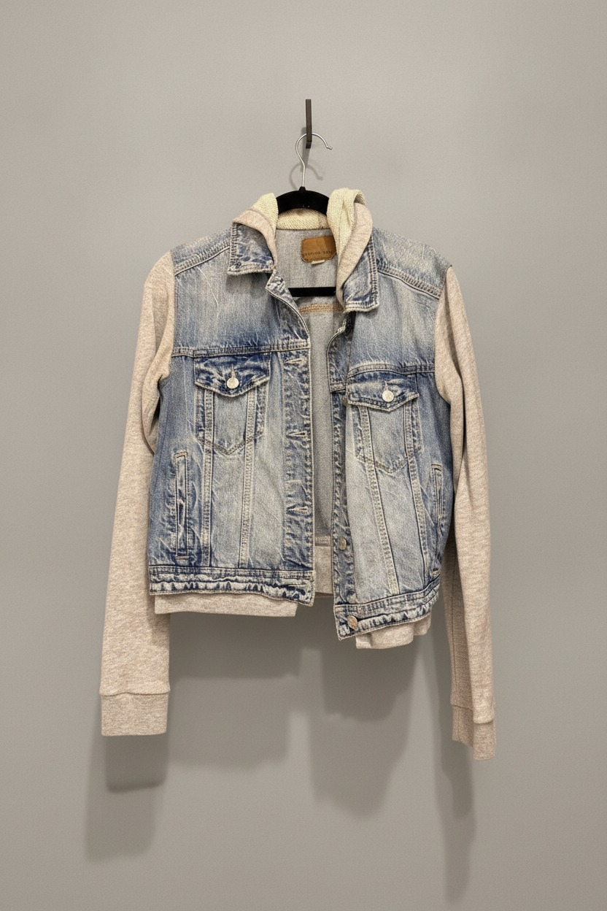 P36chamarraAMERICAN EAGLE ColorAzul claro deslavado con gris jaspeadoEstiloChamarra de mezclilla de corte regular combinada con sudaderaMaterial—Algodón 100%Algodón 95% / Elastano 5%Algodón 98% / Elastano 2% (mezclilla)Algodón 80% / Poliéster 20%Algodón 60% / Poliéster 40%Poliéster 100%Poliéster 95% / Elastano 5%Poliéster 65% / Algodón 35%Poliéster 70% / Viscosa 30%Viscosa 100%Viscosa 95% / Elastano 5%Lino 100%Lino 55% / Algodón 45%Lana 100%Lana 80% / Poliamida 20%Seda 100%Cashmere 100%Lana 90% / Cashmere 10%Poliamida (nylon) 100%Poliamida 80% / Elastano 20%Acrílico 100%Poliuretano 100% (piel sintética)Cuero 100%DetallesManga larga, capucha, botones metalicos y bolsillos de parche en pecho Aprobar Se cambió la prenda
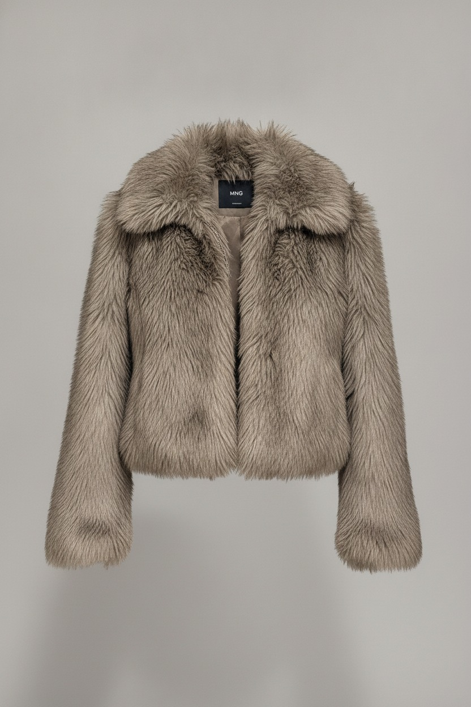 P37abrigoMNG EU-USA M/MEX M ColorGris topoEstiloAbrigo corto de corte rectoMaterial—Algodón 100%Algodón 95% / Elastano 5%Algodón 98% / Elastano 2% (mezclilla)Algodón 80% / Poliéster 20%Algodón 60% / Poliéster 40%Poliéster 100%Poliéster 95% / Elastano 5%Poliéster 65% / Algodón 35%Poliéster 70% / Viscosa 30%Viscosa 100%Viscosa 95% / Elastano 5%Lino 100%Lino 55% / Algodón 45%Lana 100%Lana 80% / Poliamida 20%Seda 100%Cashmere 100%Lana 90% / Cashmere 10%Poliamida (nylon) 100%Poliamida 80% / Elastano 20%Acrílico 100%Poliuretano 100% (piel sintética)Cuero 100%DetallesManga larga, solapa amplia y cierre frontal Aprobar Se cambió la prenda
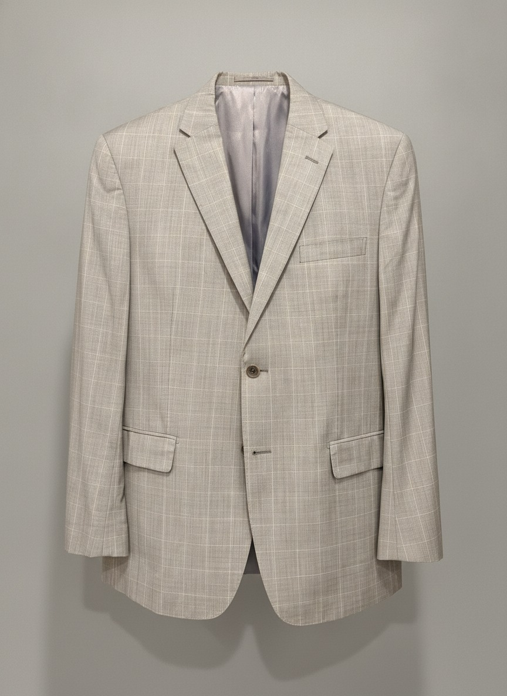 P38blazerCALDERONI ColorGris claro con patrón de cuadros tipo ventanaEstiloSaco blazer formal de corte clásicoMaterial—Algodón 100%Algodón 95% / Elastano 5%Algodón 98% / Elastano 2% (mezclilla)Algodón 80% / Poliéster 20%Algodón 60% / Poliéster 40%Poliéster 100%Poliéster 95% / Elastano 5%Poliéster 65% / Algodón 35%Poliéster 70% / Viscosa 30%Viscosa 100%Viscosa 95% / Elastano 5%Lino 100%Lino 55% / Algodón 45%Lana 100%Lana 80% / Poliamida 20%Seda 100%Cashmere 100%Lana 90% / Cashmere 10%Poliamida (nylon) 100%Poliamida 80% / Elastano 20%Acrílico 100%Poliuretano 100% (piel sintética)Cuero 100%DetallesManga larga, solapa con muesca, cierre de dos botones y bolsillos con solapa Aprobar Se cambió la prenda
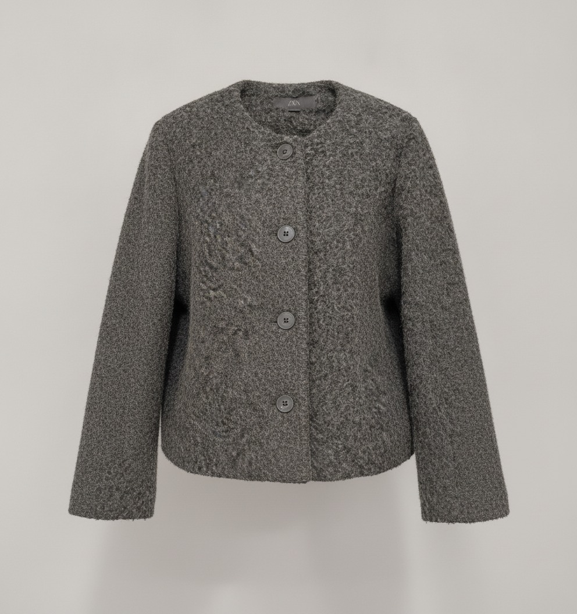 P39abrigoZARA ColorGris oscuroEstiloAbrigo corto de corte rectoMaterial—Algodón 100%Algodón 95% / Elastano 5%Algodón 98% / Elastano 2% (mezclilla)Algodón 80% / Poliéster 20%Algodón 60% / Poliéster 40%Poliéster 100%Poliéster 95% / Elastano 5%Poliéster 65% / Algodón 35%Poliéster 70% / Viscosa 30%Viscosa 100%Viscosa 95% / Elastano 5%Lino 100%Lino 55% / Algodón 45%Lana 100%Lana 80% / Poliamida 20%Seda 100%Cashmere 100%Lana 90% / Cashmere 10%Poliamida (nylon) 100%Poliamida 80% / Elastano 20%Acrílico 100%Poliuretano 100% (piel sintética)Cuero 100%DetallesManga larga, cuello redondo sin solapa y cierre de botones frontales Aprobar Se cambió la prenda
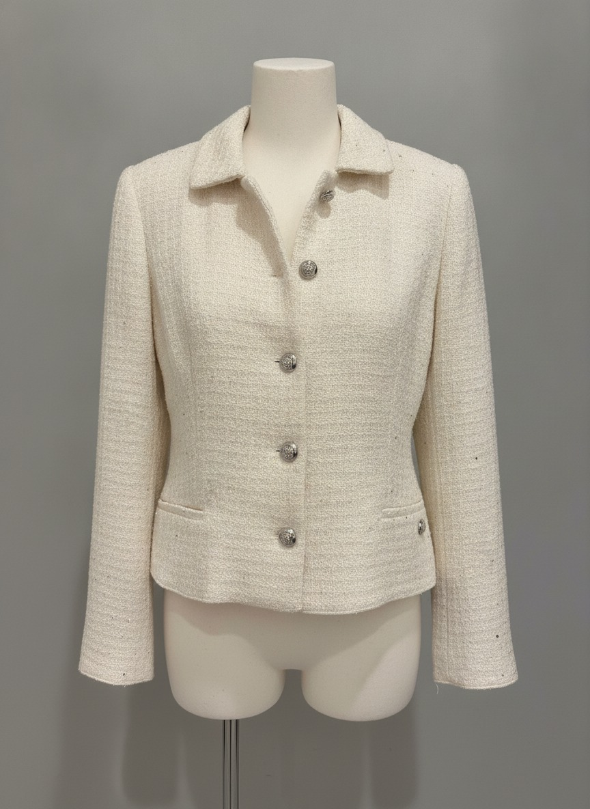 P40blazerZARA EUR M USA M MEX 28 ColorBlanco hueso con sutiles destellos brillantesEstiloBlazer corto de corte rectoMaterial—Algodón 100%Algodón 95% / Elastano 5%Algodón 98% / Elastano 2% (mezclilla)Algodón 80% / Poliéster 20%Algodón 60% / Poliéster 40%Poliéster 100%Poliéster 95% / Elastano 5%Poliéster 65% / Algodón 35%Poliéster 70% / Viscosa 30%Viscosa 100%Viscosa 95% / Elastano 5%Lino 100%Lino 55% / Algodón 45%Lana 100%Lana 80% / Poliamida 20%Seda 100%Cashmere 100%Lana 90% / Cashmere 10%Poliamida (nylon) 100%Poliamida 80% / Elastano 20%Acrílico 100%Poliuretano 100% (piel sintética)Cuero 100%DetallesManga larga, cuello con solapa, botones metálicos plateados grabados y bolsillos simulados Aprobar Se cambió la prenda
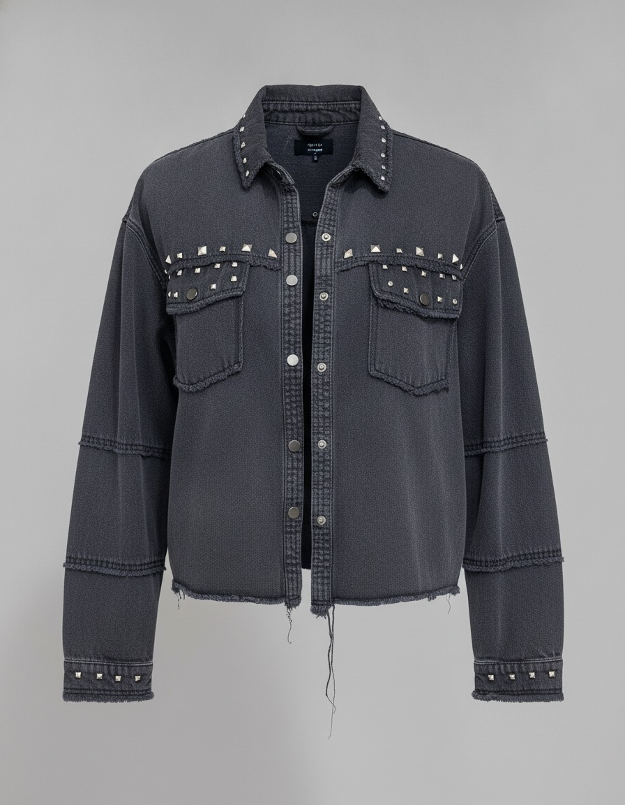 P41chamarra ColorGris oscuro deslavadoEstiloChamarra de mezclilla de corte holgadoMaterial—Algodón 100%Algodón 95% / Elastano 5%Algodón 98% / Elastano 2% (mezclilla)Algodón 80% / Poliéster 20%Algodón 60% / Poliéster 40%Poliéster 100%Poliéster 95% / Elastano 5%Poliéster 65% / Algodón 35%Poliéster 70% / Viscosa 30%Viscosa 100%Viscosa 95% / Elastano 5%Lino 100%Lino 55% / Algodón 45%Lana 100%Lana 80% / Poliamida 20%Seda 100%Cashmere 100%Lana 90% / Cashmere 10%Poliamida (nylon) 100%Poliamida 80% / Elastano 20%Acrílico 100%Poliuretano 100% (piel sintética)Cuero 100%DetallesManga larga, cuello camisero, tachuelas metálicas plateadas, bolsillos frontales y bordes deshilachados Aprobar Se cambió la prenda
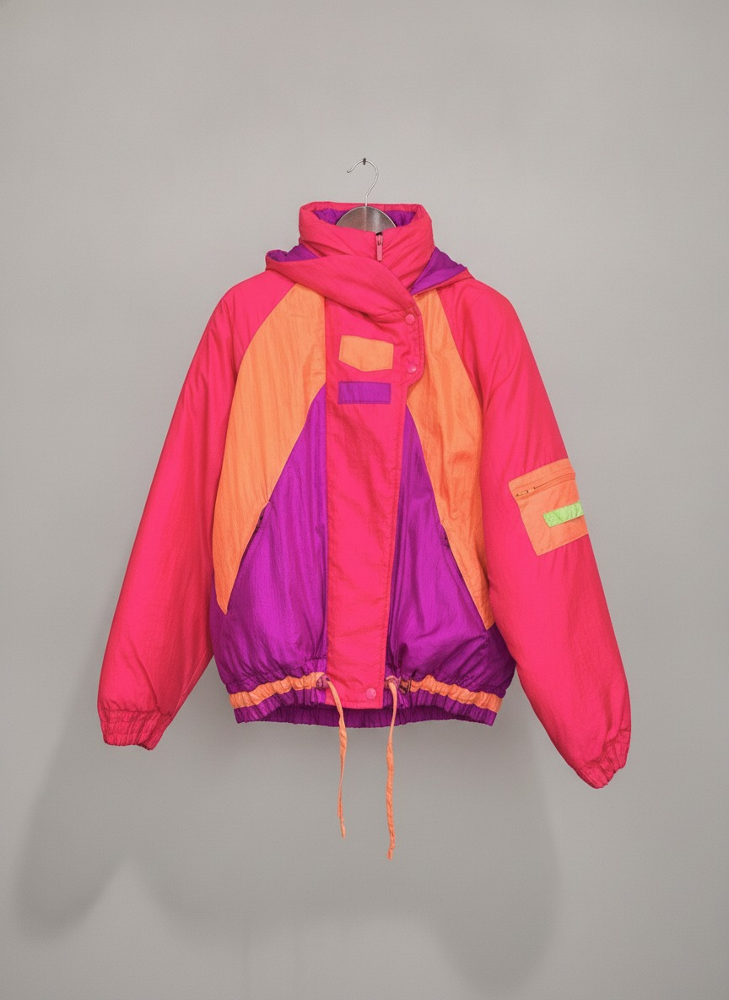 P42chamarraPROFILE ColorBloques de color fucsia, naranja neón y moradoEstiloChamarra de esquí retro vintageMaterial—Algodón 100%Algodón 95% / Elastano 5%Algodón 98% / Elastano 2% (mezclilla)Algodón 80% / Poliéster 20%Algodón 60% / Poliéster 40%Poliéster 100%Poliéster 95% / Elastano 5%Poliéster 65% / Algodón 35%Poliéster 70% / Viscosa 30%Viscosa 100%Viscosa 95% / Elastano 5%Lino 100%Lino 55% / Algodón 45%Lana 100%Lana 80% / Poliamida 20%Seda 100%Cashmere 100%Lana 90% / Cashmere 10%Poliamida (nylon) 100%Poliamida 80% / Elastano 20%Acrílico 100%Poliuretano 100% (piel sintética)Cuero 100%DetallesManga larga, cuello alto, cierre frontal con solapa, bolsillo en la manga y cordones ajustables en la cintura Aprobar Se cambió la prenda
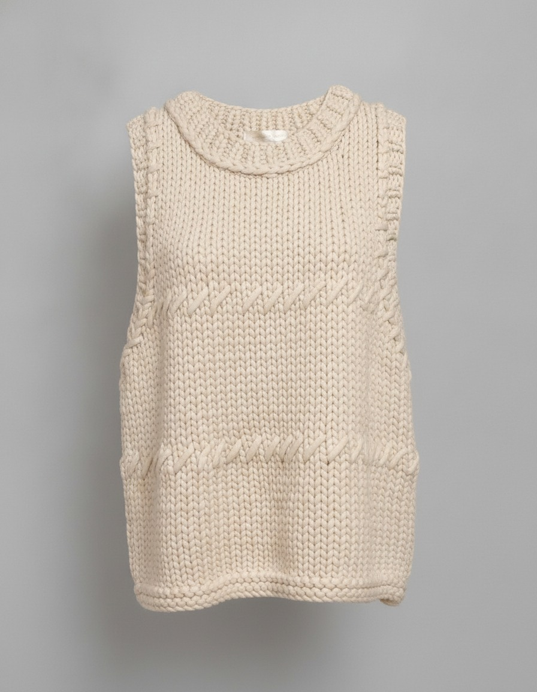 P43sweaterLOVESHACKFANCY S ColorCrema unicolorEstiloTop chaleco sin mangas de corte rectoMaterial—Algodón 100%Algodón 95% / Elastano 5%Algodón 98% / Elastano 2% (mezclilla)Algodón 80% / Poliéster 20%Algodón 60% / Poliéster 40%Poliéster 100%Poliéster 95% / Elastano 5%Poliéster 65% / Algodón 35%Poliéster 70% / Viscosa 30%Viscosa 100%Viscosa 95% / Elastano 5%Lino 100%Lino 55% / Algodón 45%Lana 100%Lana 80% / Poliamida 20%Seda 100%Cashmere 100%Lana 90% / Cashmere 10%Poliamida (nylon) 100%Poliamida 80% / Elastano 20%Acrílico 100%Poliuretano 100% (piel sintética)Cuero 100%DetallesCuello redondo, sin mangas y bordes con relieve trenzado Aprobar Se cambió la prenda
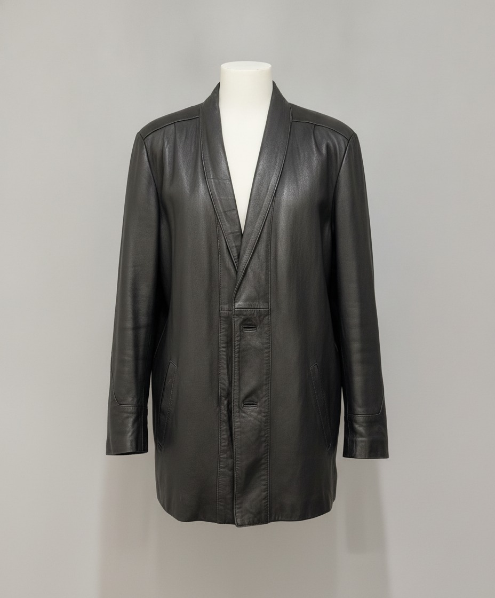 P44chamarraM ColorNegro lisoEstiloChamarra de corte rectoMaterial—Algodón 100%Algodón 95% / Elastano 5%Algodón 98% / Elastano 2% (mezclilla)Algodón 80% / Poliéster 20%Algodón 60% / Poliéster 40%Poliéster 100%Poliéster 95% / Elastano 5%Poliéster 65% / Algodón 35%Poliéster 70% / Viscosa 30%Viscosa 100%Viscosa 95% / Elastano 5%Lino 100%Lino 55% / Algodón 45%Lana 100%Lana 80% / Poliamida 20%Seda 100%Cashmere 100%Lana 90% / Cashmere 10%Poliamida (nylon) 100%Poliamida 80% / Elastano 20%Acrílico 100%Poliuretano 100% (piel sintética)Cuero 100%DetallesManga larga, cuello de solapa lisa, botones ocultos y bolsillos laterales Aprobar Se cambió la prenda
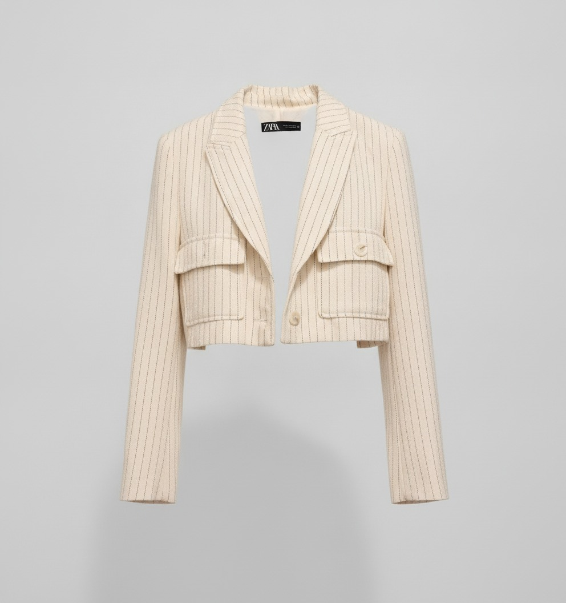 P45blazerZARA EUR M USA M MEX 28 ColorBlanco hueso con raya diplomática oscuraEstiloBlazer corto de corte estructuradoMaterial—Algodón 100%Algodón 95% / Elastano 5%Algodón 98% / Elastano 2% (mezclilla)Algodón 80% / Poliéster 20%Algodón 60% / Poliéster 40%Poliéster 100%Poliéster 95% / Elastano 5%Poliéster 65% / Algodón 35%Poliéster 70% / Viscosa 30%Viscosa 100%Viscosa 95% / Elastano 5%Lino 100%Lino 55% / Algodón 45%Lana 100%Lana 80% / Poliamida 20%Seda 100%Cashmere 100%Lana 90% / Cashmere 10%Poliamida (nylon) 100%Poliamida 80% / Elastano 20%Acrílico 100%Poliuretano 100% (piel sintética)Cuero 100%DetallesManga larga, cuello de solapa, bolsillos frontales con tapa y botones Aprobar Se cambió la prenda
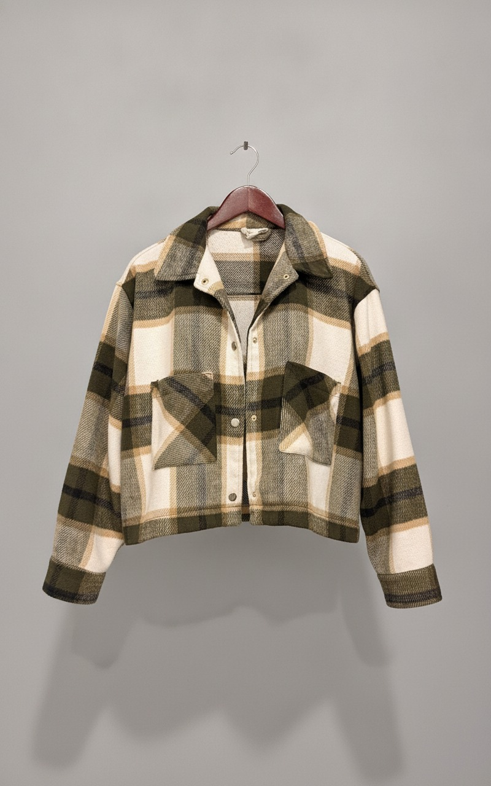 P46chamarraFOR THE REPUBLIC M/M ColorCuadros grandes en tonos verde oliva, crema y beigeEstiloSobrecamisa corta de corte holgadoMaterial—Algodón 100%Algodón 95% / Elastano 5%Algodón 98% / Elastano 2% (mezclilla)Algodón 80% / Poliéster 20%Algodón 60% / Poliéster 40%Poliéster 100%Poliéster 95% / Elastano 5%Poliéster 65% / Algodón 35%Poliéster 70% / Viscosa 30%Viscosa 100%Viscosa 95% / Elastano 5%Lino 100%Lino 55% / Algodón 45%Lana 100%Lana 80% / Poliamida 20%Seda 100%Cashmere 100%Lana 90% / Cashmere 10%Poliamida (nylon) 100%Poliamida 80% / Elastano 20%Acrílico 100%Poliuretano 100% (piel sintética)Cuero 100%DetallesManga larga, cuello camisero, bolsillos de parche al frente y cierre de broches de presión Aprobar Se cambió la prenda
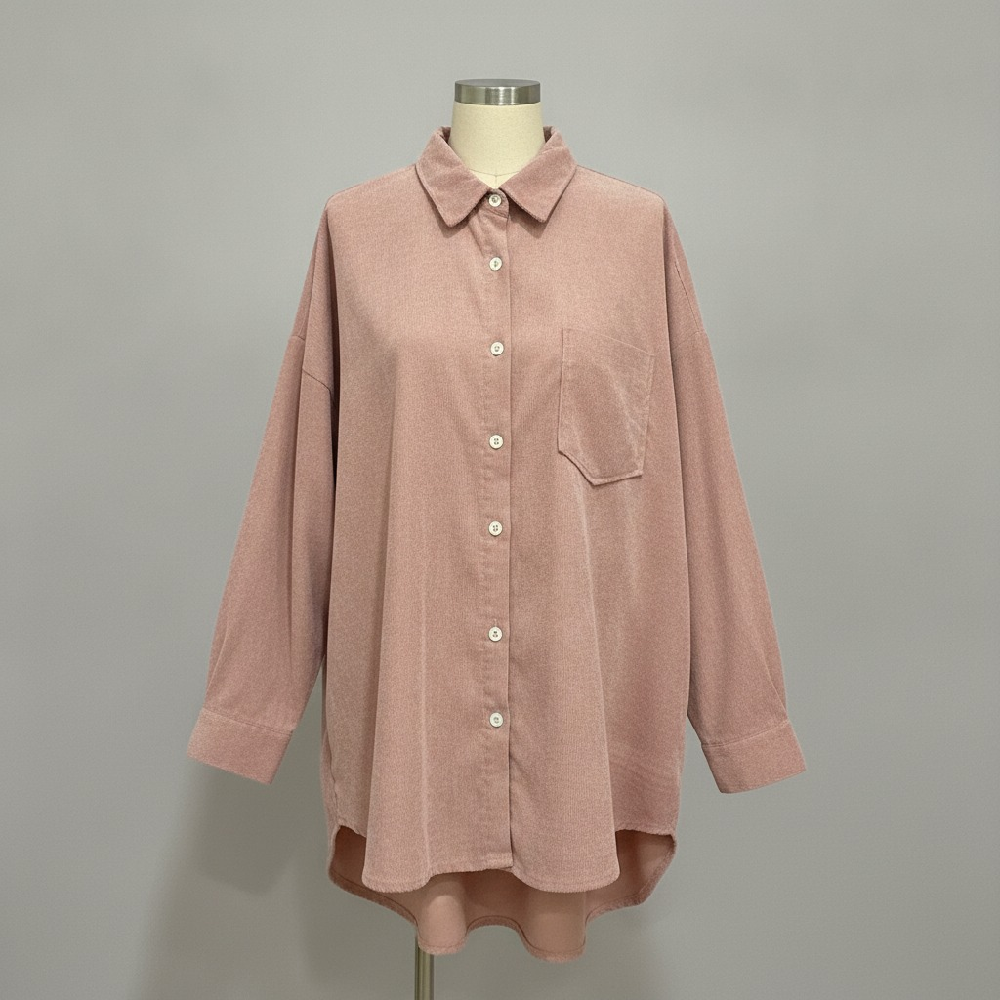 P47camisaMOMOKROM ColorRosa empolvadoEstiloCamisa oversize de corte holgadoMaterial—Algodón 100%Algodón 95% / Elastano 5%Algodón 98% / Elastano 2% (mezclilla)Algodón 80% / Poliéster 20%Algodón 60% / Poliéster 40%Poliéster 100%Poliéster 95% / Elastano 5%Poliéster 65% / Algodón 35%Poliéster 70% / Viscosa 30%Viscosa 100%Viscosa 95% / Elastano 5%Lino 100%Lino 55% / Algodón 45%Lana 100%Lana 80% / Poliamida 20%Seda 100%Cashmere 100%Lana 90% / Cashmere 10%Poliamida (nylon) 100%Poliamida 80% / Elastano 20%Acrílico 100%Poliuretano 100% (piel sintética)Cuero 100%DetallesManga larga, cuello camisero, bolsillo frontal de parche y botones Aprobar Se cambió la prenda